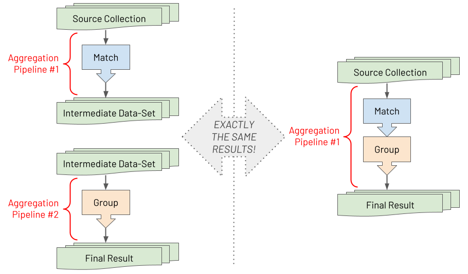

Â
Practical MongoDB Aggregations, by Paul Done (@TheDonester)
Version: 0.88
Content created & assembled at: https://github.com/pkdone/practical-mongodb-aggregations-book
Copyright © 2021 Paul Done

This work is licensed under a Creative Commons Attribution-NonCommercial-ShareAlike 4.0 International License

Front cover image adapted from a Photo by Henry & Co. from Pexels under the Pexels License (free to use & modify)
Acknowledgements
- Jake McInteer: many thanks for extensive review and valuable feedback
Introduction
Who Is This Book For?
This book is for developers, architects, data analysts and data scientists who have some familiarity with MongoDB, and who have already acquired at least a small amount of basic experience using the MongoDB Aggregation Framework. For those who don't yet have this 'entry level' knowledge, it is recommended to start with one or more of the following resources, before using this book:
- The MongoDB Manual, and specifically its Aggregation section
- The MongoDB University free online courses, and specifically The MongoDB Aggregation Framework (M121) introduction course
- The MongoDB: The Definitive Guide book by Bradshaw, Brazil & Chodorow, and specifically its section 7. Introduction to the Aggregation Framework
This is neither a book for complete novices, explaining how to get started on your first MongoDB aggregation pipeline, nor is it a comprehensive programming language guide, detailing every nuance of the Aggregation Framework and its syntax. Instead, this book is intended to assist with two key aspects:
- Providing a set of opinionated yet easy to digest principles and approaches for increasingly your effectiveness in using the Aggregation Framework
- Providing a set of examples for using the Aggregation Framework to solve common data manipulation challenges, with varying degrees of complexity
What Is The Aggregation Framework?
MongoDB's aggregations language is somewhat of a paradox. It can appear daunting yet it is straight-forward. It can seem verbose yet it is lean and to the point. It is probably close to being Turing complete to be able to solve any business problem *, yet it is a strongly opinionated Domain Specific Language (DSL), where, if you attempt to veer away from its core purpose of mass data manipulation, it will try its best to resist you.
* As John Page once showed, you can even code a Bitcoin miner using MongoDB aggregations, not that he would ever recommend you do this for real, for both the sake of your bank balance and the environment!
Invariably, for beginners, the Aggregation Framework seems difficult to understand and comes with an initial steep learning curve which must be overcome to become productive. In some programming languages, only mastering the rudimentary elements of the language can result in being mostly productive in that language. With MongoDB aggregations, the level of initial investment required by an individual is usually a little greater. However, once mastered, users generally find it provides an elegant, natural and efficient solution to breaking down a complex set of data manipulations into a series of simple easy to understand steps. This is when users achieve the Zen of MongoDB aggregations and it is a lovely place to be.
MongoDB Aggregations is a programming language that is focussed on data-oriented problem solving rather than business process problem solving. It is essentially a declarative programming language, rather than an imperative programming language. Also, depending on how you squint, it can be regarded as a functional programming language rather than a procedural programming language. Why? Well an aggregation pipeline is an ordered series of declarative statements, called stages, where the entire output of one stage forms the entire input of the next stage, and so on, with no side-effects. This is probably the main reason why the Aggregation Framework is regarded as having a steeper learning curve compared with some programming languages. Not because it is inherently more difficult to understand but just because most developers come from a procedural programming background and not a functional one. They have to learn how to think like a functional programmer in addition to leaning the Aggregation Framework.
It is the declarative and functional characteristics of MongoDB's Aggregation Framework which ultimately make it so powerful for processing massive data sets. Users focus on defining 'the what' in terms of the required outcome, in a declarative way, more than 'the how' of specifying the exact logic to apply to achieve each transformation. Each stage in a pipeline is forced to only have one specific clear advertised purpose. At runtime, the database engine is then able to understand the exact intent of each stage. For example, the database engine can get clear answers to the questions it asks, like, is this stage for performing a filter or is this stage for grouping on some fields?. Armed with this knowledge, the database engine is afforded the opportunity to optimise the pipeline at runtime, as illustrated in the diagram below. For example, it may decide to re-order stages to optimally leverage an index whilst being sure that output isn't changed. Or, it may decide to execute some stages in parallel against subsets of the data, reducing response time, whilst again ensuring the output is never changed.

Last and by far least in terms of importance is a discussion about syntax. So far MongoDB aggregations have been described here as a programming language, which it is (a Domain Specific Language). However, what is the syntax on which MongoDB's aggregations are based on? The answer is it depends and the answer is mostly irrelevant. In this book, the examples will be highlighted using the Mongo Shell and the JavaScript interpreter it runs in, with an aggregation pipeline being expressed using a JSON based syntax. However, if you are using one of the many programming language drivers that MongoDB provides, you will be using that language to construct an aggregation pipeline, not JSON.
What's In A Name?
You might have realised by now, there doesn't seem to be one single name for the subject of this book. You will often hear:
- Aggregation
- Aggregations
- Aggregation Framework
- Aggregation Pipeline
- Aggregation Pipelines
- Aggregation Language
- ...and so on
The reality is any of these names is fine and it doesn't really matter which you use. In this book, each and all of these terms are probably used. Just take it as a positive sign that this MongoDB capability, and its title, was not born in a marketing boardroom. It was built by database engineers, for data engineers, where the branding was an afterthought at best! 😆
What Do People Use The Aggregation Framework For?
The Aggregation Framework is versatile and used for many different types of data processing and manipulation tasks. Some common example uses are for:
- Realtime analytics
- Report generation with roll-ups, sums & averages
- Realtime dashboards
- Redacting data for dynamic views
- Joining data together from different collections on the 'server-side'
- Data science, including data discovery and data wrangling
- Mass data analysis at scale (a la 'big data')
- Realtime queries where deeper database-side data post-processing is required than provided by the MongoDB Query Language (MQL)
- Copying and transforming subsets of data from one collection to another
- Navigating relationships between records, looking for patterns
- Data masking to redact & obfuscate sensitive data
- Data cleansing
- Updating a materialized view with the results of the most recent source data changes
- Supporting machine learning frameworks for efficient data analysis (e.g. via MongoDB's Spark Connector)
- ...and many more
History
The Emergence Of Aggregations
The MongoDB database was first released in February 2009 (version 1.0). Back then, both users and the predominant company engineering the database, MongoDB Inc. (called 10gen back then), were still establishing the sort of use cases that the database would excel at, and where the gaps and paper-cuts were. Within half a year of this first major release, MongoDB's engineering team had determined that users were needing a native way to process large amounts of data, to group the data into results containing totals and averages for example. A quick engineering solution was introduced, in time for the next release (1.2) in December 2009. This involved embedding a JavaScript engine in the database, allowing client applications to submit some JavaScript logic to be executed, 'server-side', adhering to a simple Map-Reduce API provided by the database.
A Map-Reduce workload essentially does two things. Firstly it scans the full data-set looking for the matching subset of records required for the given scenario (the 'map' action). Secondly, it then condenses the subset of matched data down into grouped, totalled and averaged result summaries (the 'reduce' action). Functionally, MongoDB's Map-Reduce capability provided a solution to users' common data processing requirements in MongoDB, but it came with the following drawbacks:
- Users have to provide two sets of JavaScript logic, a map (or matching) function and a reduce (or grouping/summing) function, and neither are very intuitive to develop, lacking a strong data-oriented bias
- At runtime, the lack of ability to explicitly associate a specific intent to an arbitrary piece of logic means that the database engine has no opportunity to identify and apply optimisations (e.g. targetting indexes or parallelising some steps); the database has to be conservative, executing the workload with minimal concurrency and employing locks at various stages to prevent the risk of race conditions, corruptions and inconsistencies in results
- Lack of scalability across Sharded clusters by virtue of the way Map-Reduce is implemented in the codebase
Over the subsequent couple of years, as user behaviour with and without Map-Reduce became more understood, engineers within MongoDB Inc. were able to envision and then build a more targeted and data-oriented Domain Specific Language (DSL). They saw how to deliver a framework with strong developer composability characteristics, where each stage has clear advertised intent thus allowing the realisation of optimisations by the database engine. In August 2012, this solution, called the Aggregation Framework, was introduced in the 2.2 release version of MongoDB. MongoDB's Aggregation Framework provided a far more powerful, scalable and easy to use replacement to Map-Reduce.
Within its first year the Aggregation Framework rapidly become the go to tool for processing large volumes of data in MongoDB. Now, nearly a decade on, to many users it is like the Aggregation Framework has always been part of MongoDB. It feels like part of the database's core DNA. Map-Reduce is still supported in MongoDB but it is rarely used nowadays. MongoDB aggregations is always the right answer for processing data in the database!
Key Releases & Capabilities
Below is a summary of how the Aggregation Framework has evolved over its lifetime and the additional capabilities added in each major release:
- MongoDB 2.2 (August 2012): Initial Release
- MongoDB 2.4 (March 2013): Efficiency improvements especially for sorts, concat operator
- MongoDB 2.6 (April 2014): Unlimited size result sets, explain plans, spill to disk for large sorts, option to output to a new collection, redact stage
- MongoDB 3.0 (March 2015): Date-to-string operators
- MongoDB 3.2 (December 2015): Sharded cluster optimisations, lookup (join) & sample stages, many new arithmetic & array operators
- MongoDB 3.4 (November 2016): Graph-lookup, bucketing & facets stages, many new array & string operators
- MongoDB 3.6 (November 2017): Array to/from object operators, more extensive date to/from string operators, REMOVE variable
- MongoDB 4.0 (July 2018): Number to/from string operators, string trimming operators
- MongoDB 4.2 (August 2019): Merge stage to insert/update/replace records in existing non-sharded & sharded collections, set & unset stages to address the verbosity/rigidity of project stages, trigonometry operators, regular expression operators, random number operator
- MongoDB 4.4 (July 2020): Union stage, custom JavaScript expression operators (function & accumulator), first & last array element operators, string replacement operators
Guiding Tips & Principles
First major part of the book, providing a small set of opinionated yet easy to digest principles and approaches for increasing effectiveness and productivity when developing aggregation pipelines.
Getting Started
To try the examples in the second half of this book you need the following two elements:
- A MongoDB database, version 4.2 or greater, running somewhere which is network accessible from your workstation
- A MongoDB client tool running on your workstation with which to submit aggregation execution requests and to then view the results
Note, each example is marked with the minimum version of MongoDB it will successfully execute on, but from a minimum of version 4.2 onwards. For MongoDB versions 4.0 and earlier, some examples may work unchanged, some examples may work with minor alterations and some may not work at all due to fundamental dependencies on stages or operations which were added in MongoDB versions 4.2 or greater.
Database
The database to connect to could be a MongoDB version 4.2+ deployment which is single-server, a replica-set or a sharded cluster running locally on your workstation or remotely on-prem or in the cloud. It doesn't matter which. You just need to know the MongoDB URL for connecting to the database (including any authentication credentials required for full read and write access).
If you don't already have access to a MongoDB database, the two easiest options for running one, for free, are:
- Install and run a MongoDB single server locally on your workstation
- Provision a Free Tier MongoDB Cluster in MongoDB Atlas which is MongoDB Inc.'s cloud-based Database-as-a-Service (once deployed, in the Atlas Console there is button you can click to copy the URL of the cluster)
Client Tool
There are many options the the client tool, four of which are:
- Modern Shell. Install the modern version of MongoDB's command line tool, the Mongo Shell:
mongosh - Legacy Shell. Use the legacy version of MongoDB's command line tool, the Mongo Shell:
mongo(this binary is bundled with a MongoDB database installation or can be downloaded from the Atlas console) - Compass. Install the official MongoDB Inc. provided graphical user interface (GUI) tool, MongoDB Compass
- Studio 3T. Install the 3rd party 3T Software Labs provided graphical user interface (GUI) tool, Studio 3T
The examples provided in this book are presented in such a way to make it easy to cut and paste the code into the Mongo Shell (mongosh or mongo) to be executed. All subsequent instructions in this book will assume you are using the Shell. However, you should find it straight-forward to use one of the mentioned GUI tools instead, to consume the code examples provided. Of the two Shell versions, you will be likely to find the modern Shell easier to use and view results with.
Mongo Shell With Local Database
Here is an example of starting the modern Mongo Shell to connect to a MongoDB single-server database if you've installed one locally on your workstation (change the text mongosh to mongo if you are using the legacy Shell):
mongosh "mongodb://localhost:27017"
Mongo Shell With Atlas Database
Here is an example of starting the modern Mongo Shell to connect to a Atlas Free Tier MongoDB Cluster (change the text mongosh to mongo if you are using the legacy Shell):
mongosh "mongodb+srv://mycluster.a123b.mongodb.net/test" --username myuser
Note, before running the command above, ensure
- You have added your workstation's IP address to the Atlas Access List
- You have created a database user for the deployed Atlas cluster, with rights to create, read and write to any database
- You have changed the dummy URL and username text, shown in the above example command, to match your real cluster's details, which are accessible via the
Connectbutton in the Atlas Console
MongoDB Compass GUI
MongoDB Compass provides an Aggregation Pipeline Builder tool to assist users to prototype and debug aggregation pipelines and then export them for use in different programming languages. Below is a screenshot of this tool in Compass:

Studio 3T GUI
Studio 3T provides an Aggregation Editor tool to help users to prototype and debug aggregation pipelines and then translate them for use in different programming languages. Below is a screenshot of this tool in Studio 3T:

Getting Help
No one can hold in their heads, the names of all the different stages and operators available in the MongoDB Aggregation Framework, and their specific syntax. I'd bet even MongoDB Aggregations Royalty (Asya Kamsky) couldn't, although I'm sure she would give it a good go! 😆
The good news is there is no need to try to remember all the stages & operators. The MongoDB online documentation provides a set of excellent references for these, here:
- MongoDB Aggregation Pipeline Stages reference
- MongoDB Aggregation Pipeline Operators reference
Additionally, if you are getting stuck with an aggregation pipeline and want some help, there is an active online community out there who will invariably have the answer. So just pose your questions at either:
- The MongoDB Developer Hub - Community Forums
- Stack Overflow - MongoDB Questions
You may be asking for just general advice. However, if you are asking for help on a specific aggregation pipeline that you are currently prototyping, it is highly recommanded to provide a sample input document and a copy of your current pipeline code (in its JSON syntax format, and not a programming language specific format). This helps maximise the likelihood of you receiving a timely and optimal response.
Embrace Composibility For Increased Productivity
As described in this book's introduction, an aggregation pipeline is an ordered series of declarative statements, called stages, where the entire output of one stage forms the entire input of the next stage, and so on, with no side-effects. Pipelines exhibit high composability where stages are stateless self-contained components that can be selected and assembled in various combinations (pipelines) to satisfy specific requirements. This composability helps to promote iterative prototyping, allowing uncomplicated testing after each increment.
With MongoDB's aggregations, a complex problem requiring a complex aggregation pipeline can simply be broken down in to individual straightforward stages, where each stage can be developed and tested in isolation first. To better comprehend this composability, it can help to internalise the following visual model.

Essentially, if you have two pipelines with one stage in each and you run the second pipeline after successfully completing the first pipeline, the final output result set is exactly the same as if you have just run a single pipeline containing both stages serially. There no difference between the two. By understanding how a problem can be broken down in this way when building aggregation pipelines, it helps to reduce the cognitive load on you as a developer. Aggregation pipelines enable you to break down a big problem into lots of small problems and by embracing this approach of first developing each stage separately, then even the most complex challenges become surmountable.
Specific Tips To Promote Composability
Now in reality, once most developers become adept at using the Aggregation Framework, they tend not to rely on temporary intermediate collections whilst prototyping each stage, although it is still a valid development approach if you prefer it. Instead, seasoned aggregation pipelines developers typically just comment out one or more stages of an aggregation pipeline when using the Mongo Shell (or use the 'disable stage' capability provided by the GUI tools for MongoDB).
Some of the principles to strive for, to encourage composability and hence productivity, are:
- Easy disabling of subsets of stages, whilst prototyping
- Easy addition of new fields to a stage or new stages to a pipeline by performing a copy, a paste and then a modification, without hitting cryptic error messages which result from issues like missing out a comma before the newly added item
- Easy appreciation, at a glance, of each distinct stage its purpose
With these principles in mind, the following is an opinionated list of guidelines for the way you should textually craft your pipelines in JavaScript, to improve your pace of pipeline development.
- Don't start or end a stage on the same line as another stage
- For every field in a stage, and for every stage in a pipeline, include a trailing comma even if it is currently the last item
- Include an empty newline between every stage
- For complex stages include a
//comment with an explanation, on a newline, before the stage - To 'disable' some stages of a pipeline whilst prototyping another stage, just use the multi-line comment
/*prefix and*/suffix
Below is an example of a poor pipeline layout, where none of the guiding principles have been followed:
// BAD
var pipeline = [
{'$unset': [
'_id',
'address'
]}, {'$match': {
'dateofbirth': {'$gte': ISODate('1970-01-01T00:00:00Z')}
}}//, {'$sort': {
// 'dateofbirth': -1
//}}, {'$limit': 2} */
];
Whereas the following is an example of far better pipeline layout, where all of the guiding principles have been followed:
// GOOD
var pipeline = [
{'$unset': [
'_id',
'address',
]},
// Only match people born on or after 1st Janurary 1970
{'$match': {
'dateofbirth': {'$gte': ISODate('1970-01-01T00:00:00Z')},
}},
/*
{'$sort': {
'dateofbirth': -1,
}},
{'$limit': 2},
*/
];
Notice trailing commas are included above, at both the end of stage and end of field levels.
It is also worth mentioning that some (but not all) developers take a slightly different but equally valid approach to constructing a pipeline. They decompose each stage in the pipeline into different JavaScript variables, where each stage variable is defined separately, as show in the example below:
// GOOD
var unsetStage = {
'$unset': [
'_id',
'address',
]};
var matchStage = {
'$match': {
'dateofbirth': {'$gte': ISODate('1970-01-01T00:00:00Z')},
}};
var sortStage = {
'$sort': {
'dateofbirth': -1,
}};
var limitStage = {'$limit': 2};
var pipeline = [
unsetStage,
matchStage,
sortStage,
limitStage,
];
This book is not advocating this 'multi-variable' approach over a 'single-variable' approach to defining a pipeline. It is just highlighting another highly composable option. Ultimately it is a personal choice about which you find most comfortable and productive. Indeed, some developers will go a step further, if not intending to transfer the prototyped pipeline to another programming language in their target application code. They will factor out complex boilerplate parts of their pipeline into separate JavaScript functions, which can be re-used from multiple places in their main JavaScript based pipeline.
To Project Or Not To Project, That Is The Question
The quintessential tool in MongoDB's Query Language (MQL) to specify or restrict fields to return in a query result set is a projection. In the MongoDB Aggregation Framework, the analogous facility for specifying fields to include or exclude in a result is the $project stage. For many earlier versions of MongoDB, this was the only tool to define which fields to include and exclude, however it comes with a few usability challenges:
-
$project is confusing and non-intuitive. In a single stage you can only choose to include fields or to exclude fields, but not both, with the exception of being able to define the
_idfield to exclude yet define other fields to include. It's as if$projecthas an identity crisis. -
$project is verbose and inflexible. If you want to include a new field into each result record (e.g. concatenating values from two other fields together) or include a new value for an existing named field (e.g. convert text to a date), you are then forced to name all other fields in the projection for inclusion. If each record has 100 fields, and you then need to use a
$projectstage for the first time, to include a new 101st field, you also have to name all the 100 fields in the$projectstage too. This irritation is further compounded if you have an evolving data model, where additional new fields appear in some records over time. Using$projectfor inclusion means each time a new field appears in the data-set, a developer has to go back to the old aggregation pipeline, modifying it to name the new field explicitly for inclusion in the results.
In MongoDB version 4.2, the $set and $unset stages were introduced, which, in most cases, are preferable to using $project for declaring field inclusion and exclusion respectively. They make the intent of the code far clearer, they lead to less verbose pipelines and, criticality, they reduce the need to refactor a pipeline whenever the data model evolves. How this works and guidance on when to use $set & $unset stages is described in section 'When To Use $set & $unset', below.
Despite the challenges however, there are some specific situations where using $project is advantageous over $set/$unset. This is described in section 'When To Use $project', below.
To add to the confusion, in MongoDB 3.4, a first attempt at addressing some of the disadvantages of $project_ was made by introducing a new $addFields stage, which has the exact behaviour as $set ($set actually came later than $addFields). No direct equivalent to $unset was provided back then. Now that both $set and $unest stages are available in modern versions of MongoDB, and because their counter purposes are so obvious to deduce by their names ($set Vs $unset), it is recommended to not use $addFields. This helps with consistency and to avoid any confusion of intent. If you have come to MongoDB only recently, just pretend $addFields never existed!__ 😆
When To Use Set & Unset
$set & $unset stages should be used when most of the fields in the input records should be retained and only a minority subset of fields need to be added, modified or removed. This is the case for the majority of uses of aggregation pipelines.
For example, imagine there is a collection of credit card payment records as documents similar to the following:
// INPUT (a record from the source collection to be operated on by an aggregation)
{
_id: ObjectId("6044faa70b2c21f8705d8954"),
card_name: 'Mrs. Jane A. Doe',
card_num: '1234567890123456',
card_expiry: '2023-08-31T23:59:59.736Z',
card_sec_code: '123',
card_provider_name: 'Credit MasterCard Gold',
transaction_id: 'eb1bd77836e8713656d9bf2debba8900',
transaction_date: 2021-01-13T09:32:07.000Z,
transaction_curncy_code: 'GBP',
transaction_amount: Decimal128("501.98"),
reported: true
}
Then imagine an aggregation pipeline is required, to produce modified versions of the documents, as shown below:
// OUTPUT (a record in the results of the executed aggregation)
{
card_name: 'Mrs. Jane A. Doe',
card_num: '1234567890123456',
card_expiry: 2023-08-31T23:59:59.736Z, // Field type converted from text to date
card_sec_code: '123',
card_provider_name: 'Credit MasterCard Gold',
transaction_id: 'eb1bd77836e8713656d9bf2debba8900',
transaction_date: 2021-01-13T09:32:07.000Z,
transaction_curncy_code: 'GBP',
transaction_amount: Decimal128("501.98"),
reported: true,
card_type: 'CREDIT' // New field added using a literal value
}
Here, shown by the // comments, there was a requirement to slightly modify the structure of each document, converting the card_expiry text field into a proper date field, and adding a new field card_type field, set to a value of 'CREDIT', for every record.
Naively you might decide to build an aggregation pipeline using a $project stage, to achieve this transformation, which would probably look similar to the following:
// BAD
[
{'$project': {
// Modify a field + add a new field
'card_expiry': {'$dateFromString': {'dateString': '$card_expiry'}},
'card_type': 'CREDIT',
// Must now name all the other fields for those fields to be retained
'card_name': 1,
'card_num': 1,
'card_sec_code': 1,
'card_provider_name': 1,
'transaction_id': 1,
'transaction_date': 1,
'transaction_curncy_code': 1,
'transaction_amount': 1,
'reported': 1,
// Remove _id field
'_id': 0,
}},
]
As you can see, the pipeline's stage is quite verbose and because a $project stage is being used to modify/add two fields, you are forced to also explicitly name each other existing field of the source records, for inclusion, otherwise that information will be lost during the transformation. Imagine if each payment document has hundreds of possible fields, rather than just ten!
A better approach to building the aggregation pipeline, to achieve the exact same results, would be to use $set and $unset instead, as shown below:
// GOOD
[
{'$set': {
// Modified + new field
'card_expiry': {'$dateFromString': {'dateString': '$card_expiry'}},
'card_type': 'CREDIT',
}},
{'$unset': [
// Remove _id field
'_id',
]},
]
This time, if some new documents are subsequently added to the existing payments collection, which include additional new fields, e.g. settlement_date & settlement_curncy_code', then no changes are required to the aggregation pipeline to allow these new fields to automatically appear in the existing aggregation pipeline's results. However, when using $project, each time the possibility of a new field arises, a developer has to first refactor the pipeline to incorporate an additional inclusion declaration (e.g. 'settlement_date': 1, 'settlement_curncy_code': 1)
When To Use Project
A $project stage should be used when the required output shape of result documents is very different than the shape of input documents, where most of the original fields are not to be included in the output.
This time for the same input payments collection, lets imagine a different aggregation pipeline was required to produce result documents, where each document's structure is required to be very different than the input structure, with far fewer field values need to be pulled through from the original input documents, similar to the following:
// OUTPUT (a record in the results of the executed aggregation)
{
transaction_info: {
date: 2021-01-13T09:32:07.000Z,
amount: Decimal128("501.98")
},
status: 'REPORTED'
}
Now, using $set/$unset in the pipeline to achieve the above output structure would be verbose and would require naming all the fields (for exclusion this time). as shown below:
// BAD
[
{'$set': {
'transaction_info.date': '$transaction_date',
'transaction_info.amount': '$transaction_amount',
'status': {'$cond': {'if': '$reported', 'then': 'REPORTED', 'else': 'UNREPORTED'}},
}},
{'$unset': [
// Remove _id field
'_id',
// Must name all existing fields to be omitted
'card_name',
'card_num',
'card_expiry',
'card_sec_code',
'card_provider_name',
'transaction_id',
'transaction_date',
'transaction_curncy_code',
'transaction_amount',
'reported',
]},
]
However, by using $project for this specific aggregation, as shown below, to achieve the exact same results, the pipeline would be less verbose and have the flexibility of not requiring modification if subsequent additions are ever made to the data model, with new previously unknown fields:
// GOOD
[
{'$project': {
'transaction_info.date': '$transaction_date',
'transaction_info.amount': '$transaction_amount',
'status': {'$cond': {'if': '$reported', 'then': 'REPORTED', 'else': 'UNREPORTED'}},
// Remove _id field
'_id': 0,
}},
]
Main Takeaway
In summary, always look to use $set & $unset for field inclusion and exclusion, rather than $project, unless it is very clear that a complete new structure is required for result documents, with very few of the input fields required. Don't bother using $addFields nowadays because it adds no value and may just cause confusion.
Using Explain Plans
Often, when using the MongoDB Query Language (MQL) to develop queries, it is useful to view the explain plan for the query to determine whether the right indexes were used and whether other aspects of the query are fully optimised. An explain plan allows you to better understand the performance implications of the query you have created.
The same applies to aggregation pipelines and the ability to view an explain plan for the executed pipeline. However, with aggregations, an explain plan tends to be even more critical because much more complex logic can be assembled and then executed in the database. Consequently, there are more potential areas for performance bottlenecks to occur, requiring optimisation. As discussed earlier in this book, the MongoDB database engine will do its best to apply its own aggregation pipeline optimisations at runtime but there will always be some types of optimisations that only the developer can make. This is because a database engine should never optimise a pipeline in such a way that it risks changing the functional behaviour and outcome of the pipeline. The database engine doesn't have the extra context that a developer's brain has, relating to the actual business problem at hand, and is thus unable to make some types of judgement calls about what pipeline changes to apply to make it run faster. This is where the explain plan for aggregations comes in useful for developers. It allows the developer to understand what optimisations the database engine has made and to then spot further potential optimisations that can be manually made to the pipeline (in addition to just identifying missing indexes).
Viewing An Explain Plan
To view the explain plan for an aggregation pipeline, a developer can execute statements such as the following:
db.coll.explain().aggregate([{'$match': {'name': 'Jo'}}]);
However, in this book you will already have seen the convention being used to, firstly, define a separate variable for the pipeline, followed by the call to the aggregate() function, passing in the pipeline argument, as shown here:
db.coll.aggregate(pipeline);
By using this approach, it easier to use the same defined pipeline variable interchangeably, with different commands. For example, whilst prototyping and debugging a pipeline it is handy to be able to quickly switch from executing the pipeline to instead generating the explain plan, for the same defined pipeline, as follows:
db.coll.explain().aggregate(pipeline);
As with MQL, there are three different verbosity modes that an aggregation's explain plan can be generated with, as shown below:
// QueryPlanner verbosity (default if no verbosity parameter provided)
db.coll.explain('queryPlanner').aggregate(pipeline);
// ExecutionStats verbosity
db.coll.explain('executionStats').aggregate(pipeline);
// AllPlansExecution verbosity
db.coll.explain('allPlansExecution').aggregate(pipeline);
In most cases, running the executionStats variant is the most useful to developers because, rather than showing just the query planner's 'thinking', it also provides real statistics on the 'winning' executed plan (e.g. the total keys examined, the total docs examined, etc.). However, this isn't the default because it actually executes the aggregation too, in addition to formulating the query plan, which, if the source collection is large and/or the pipeline is sub-optimal, could take a while to return with the explain plan result.
Note, the aggregate() function also provides a vestigial explain parameter option to enable an explain plan to be generated and returned. However this is more limited and cumbersome to use, and so nowadays is best avoided.
Understanding The Explain Plan
As an example, let's assume there is a data-set of information on people (e.g. a collection called persons with a descending index defined on a date of birth field). The following aggregation pipeline may have then been built to show the three youngest people in the collection, only for people born on or after 1970 (so there may be less than 3 records in the result if nearly all people were born before 1970):
var pipeline = [
{'$unset' : [
'_id',
'address',
'person_id'
]},
{'$sort' : {
'dateofbirth' : -1
}},
{'$match' : {
'dateofbirth' : {'$gte' : ISODate('1970-01-01T00:00:00Z')}
}},
{'$limit' : 3}
]
Then the query planner part of the explain plan might be required:
db.persons.explain('queryPlanner').aggregate(pipeline);
The query plan results for this pipeline shows the following (some less relevant information has been edited out for brevity)
"stages" : [
{"$cursor" : {
"queryPlanner" : {
"parsedQuery" : {
"dateofbirth" : {
"$gte" : ISODate("1970-01-01T00:00:00Z")
}
},
"winningPlan" : {
"stage" : "FETCH",
"inputStage" : {
"stage" : "IXSCAN",
"keyPattern" : {
"dateofbirth" : -1
},
"indexName" : "dateofbirth_-1",
"direction" : "forward",
"indexBounds" : {
"dateofbirth" : [
"[new Date(9223372036854775807), new Date(0)]"
]
}
}
}
}
}},
{"$project" : {
"_id" : false,
"person_id" : false,
"address" : false
}
},
{"$sort" : {
"sortKey" : {
"dateofbirth" : -1
},
"limit" : NumberLong(3)
}
}
]
There are some interesting insights that can be deduced from this query plan:
-
To optimise the aggregation, the database engine has reordered the pipeline and moved the filter from the
$matchto the top of the pipeline, without changing the functional behaviour or outcome of the pipeline. -
To optimise the aggregation, the database engine has been able to collapse the
$sortand$limitinto a single special internal stage which can perform both actions in one go In this case, the aggregation engine only has to track in memory the 3 currently known youngest person records at any point in time, during the sorting process, rather than holding the whole data set being sorted in memory, which may otherwise be resource prohibitive. -
The first stage of the executed internal runtime version of the pipeline, regardless of what ordered stages were placed in the pipeline by the developer, is always an internal
$cusrorstage. The$cursorruntime stage is the first thing that happens for any executing aggregation. The aggregation engine re-uses the MQL query engine to perform a 'regular' query against the collection, optionally including a filter based on the contents of the aggregation's$match, if a$matchwas defined and occurs early in the optimised pipeline. The aggregation runtime uses the resulting query cursor to pull batches of records at a time, just like a client application using a MongoDB driver would do when remotely invoking an MQL query against a database collection. As with a normal MQL query, the regular database query engine will try to use an index if it makes sense (which it does in this case, as is visible in the embedded$queryPlannermetadata, showing the"stage" : "IXSCAN",element and the index used,"indexName" : "dateofbirth_-1").
Then the execution stats part of the explain plan might then be asked for:
db.persons.explain('executionStats').aggregate(pipeline);
Below is a redacted example of the resulting execution statistics in the explain plan, highlighting some of the most important metadata elements that developers should typically focus on.
"executionStats" : {
"nReturned" : 333333,
"totalKeysExamined" : 333333,
"totalDocsExamined" : 333333,
...
"executionStages" : {
"stage" : "FETCH",
"nReturned" : 333333,
"docsExamined" : 333333,
...
"inputStage" : {
"stage" : "IXSCAN",
"nReturned" : 333333,
"indexName" : "dateofbirth_-1",
"direction" : "forward",
"keysExamined" : 333333,
...
}
Here the plan shows that an index was used, and because 'index keys examined' and 'documents examined' match, this indicates that the index was fully leveraged to completely identify the required records, which is good news. This doesn't necessarily mean the aggregation is fully optimal though. For example, if there was the need to reduce latency further, some analysis could be done to determine if the the index can completely cover the query. If the cursor query part of the the aggregation is satisfied entirely using the index and does not have to examine any documents, you would see totalDocsExamined = 0 in the resulting explain plan.
The critical information shown in executionStats is similar to the normal MQL explain plan returned for a regular find() operation, and similar principles apply for spotting things like has the optimum index been used, and does the data model lend itself to efficiently processing the query?
Pipeline Performance Considerations
As with any programming language, premature optimisation when prototyping an aggregation pipeline will often lead to an over-complicated solution which doesn't actually address the specific performance challenges that manifest. As described in the previous chapter, Using Explain Plans, the tool of choice to identify opportunities for effective optimisation is the aggregation's explain plan. This is typically used during the final stages of a pipeline's development, once the pipeline is functionally correct and producing the right data results.
However, being aware of some guiding principles regarding performance can still be useful whilst prototyping a pipeline. Importantly, such guiding principles are likely to be invaluable once the aggregation's explain plan is analysed and if it shows that the current pipeline is sub-optimal.
With this in mind, this chapter outlines three potentially 'big-ticket' considerations to make when creating or tuning an aggregation pipeline, which, when aggregating very large source data-sets, can often be the difference between an aggregation returning in milliseconds or a few seconds, versus returning in minutes, hours or even longer.
Be Cognizant Of Streaming Vs Blocking Stages Ordering
When executing an aggregation pipeline, the database engine pulls batches of records at a time from the initial query cursor that has been generated against the source collection. The database engine then attempts to stream each batch through the stages of the aggregation pipeline. For most types of pipeline stages, refereed to as streaming stages, a batch of records processed by a stage will then be streamed on to the next stage, without the stage trying to wait for all the other record batches to first arrive. However, two types of stages do have to block and wait for all batches of records outputted from a previous stage to arrive and accumulate together at that stage. These are referred to as blocking stages and specifically the two types of stages that block are:
$sort$group*
* actually when stating
$group, this also includes other less frequently used 'grouping' stages too, specifically:$bucket,$bucketAuto,$count&$sortByCount
The diagram below highlights the nature of streaming and blocking stages, where streaming stages allow batches to be processed and then passed through without waiting, whereas blocking stages wait for the whole of its input data set to arrive and accumulate before the stage then processes all this data together.

It is of course necessary for both $sort and $group to be blocking stages, as illustrated by the following examples:
-
$sort blocking requirement example: Take an example of a pipeline needing to sort people in ascending order of age. There would be a problem if the stage didn't wait to see the whole input data-set, and instead just sorted the people in one batch at a time before passing that sorted batch of people on to the next stage or final result, without waiting. The next batch of people records to arrive at the
$sortstage could well contain one or more people who are younger than the sorted ones already passed through. In the final result, these records should have appeared earlier in the final result set, but it would be too late. -
$group blocking requirement example: Take an example of a pipeline needing to group employees by one of the two work departments they belong to (either sales or manufacturing), and in the first batch of records arriving at the
$groupstage, each of the two departments groups and embeds a few employees each. There would be a problem if the$groupstage didn't wait to see the other batches and instead immediately streamed the current processed departments memberships on to the next stage or final result. The grouped department memberships output by the pipeline to the client application would be incomplete because later batches of people records are yet to still to arrive at the earlier$groupstage.
These necessary blocking stages don't just reduce aggregation execution time directly, by virtue of the fact that streaming is blocked. There is also another dimension to the performance impact incurred, related to memory consumption, which can ultimately reduce throughput and increase latency dramatically:
-
$sort memory consumption: For a
$sortstage to see all the input records at once, the host server must typically have enough capacity to hold the whole input data set in memory, which will be heavily dependent on the nature of the source data-set and how much the earlier stages of the pipeline have first reduced the data-set size. Also, multiple instances of the aggregation pipeline may be in-flight at any one time, in addition to other types of executing aggregations and database workloads, all competing for the same memory resources. If the source data-set is many gigabytes or even terabytes in size and it has not been possible for earlier stages to significantly reduce this size, it is unlikely that the host machines will have sufficient memory to support the pipeline and its blocking$sortstage. As a result, MongoDB enforces a$stagehas a limit of 100 MB of consumed RAM and throws an error if exceeded. For handling large data-sets theallowDiskUse=trueoption for the overall aggregation can be defined which results in sort operations spilling to disk where required, to not be constrained the 100 MB limit. However, the sacrifice here is significantly higher latency, and the aggregation execution time is likely to increase by orders or magnitude. There is one situation where this can be mitigated, if the$sortis not preceded by a$project,$unwindor$groupstage it can take advantage of an index for sorting, meaning it doesn't have to manifest the whole data set in memory (or overspill to disk). -
$group memory consumption: The
$groupstage has the potential to consume even more memory than a$sortoperation, if it attempting to group all records in the source data-set and retain all the data for each grouped record. This means that the output of the$groupstage would contain a larger size of data than the original input, because new groupings 'metadata' would be required too, and, for a period of time this would have all had to be held in memory by the$groupblocking stage. Taking the example before of people records, the$groupstage's output size would be the size of all the people records in the data-set, plus the size of the new departments grouping metadata. Like$sortstage there is a 100 MB RAM limit for the$groupstage, and the aggregation'sallowDiskUse=trueoption can enable the group operation to overspill to disk to avoid this limit, but with the similar higher latency consequences. However, in practicality, many types of grouping operations are primarily used to generate grouped summary data, not grouped itemised data. Therefore, in many situation where$groupstages are used, considerably reduced summary data-sets are produced, requiring far less memory than a$sortstage. For example, rather then the each department group holding a list of its employees, each group might just hold a count of employees in the department by using an accumulator operators. So, in reality, unlike sort operations, in many cases grouping operations will only require a fraction of the RAM, due only summary statistics being needed for each group.
In summary, try to move $sort & $group blocking stages to as late in the pipeline as possible. Then, hopefully due to earlier stages that first significantly reduce the number of records being streamed, these blocking stages have less records to process and hence have less thirst for RAM, resulting in an aggregation that completes quickly.
Avoid Unwinding & Regrouping Documents Just To Process Each Array's Elements
Sometimes it is necessary to transform documents from a source collection that each include an array field, where the main purpose of the aggregation pipeline is just to reduce the content of each array, in isolation, but in the same way. For example, the aggregation may just need to add together all the values of the array into a total, or retain the first or last element of the array only, or retain only one field from the sub-document that is in each array element, or any one of numerous other array reduction scenarios.
Bringing this to life more, imagine there is a product_orders collection where each document in the collection represents a product, and the list of orders is an array of elements against each product, as shown in the example below:
[
{
name: 'Asus Laptop',
orders: [
{
customer_id: 'elise_smith@myemail.com',
orderdate: 2020-05-30T08:35:52.000Z,
value: Decimal128("431.43")
},
{
customer_id: 'jjones@tepidmail.com',
orderdate: 2020-12-26T08:55:46.000Z,
value: Decimal128("429.65")
}
]
},
{
name: 'Morphy Richards Food Mixer',
orders: [
{
customer_id: 'oranieri@warmmail.com',
orderdate: 2020-01-01T08:25:37.000Z,
value: Decimal128("63.13")
}
]
}
]
Let's say that an aggregation is required to transform these documents to only include the customer_id in each order for each product, and to exclude the orderdate and value fields because they are surplus to requirements. The desired aggregation output might be:
[
{
name: 'Asus Laptop',
orders: [ 'elise_smith@myemail.com', 'jjones@tepidmail.com' ]
},
{
name: 'Morphy Richards Food Mixer',
orders: [ 'oranieri@warmmail.com' ]
}
]
One obvious way of achieving this transformation in an aggregation pipeline is to unwind the orders array for each record, producing an intermediate set of individual order records, and then group together again the orders records by product $name but only pushing the customer_id field back into the orders array and ignoring the orderdate and value fields. The required pipeline to achieve this is shown below:
// SUBOPTIMAL
var pipeline = [
{'$unwind': {
'path': '$orders',
}},
{'$group': {
'_id': '$name',
'orders': {'$push': '$orders.customer_id'},
}},
];
However, the pipeline is suboptimal because a $group stage has been introduced, which, as outlined earlier in this chapter, is a blocking stage. This will potentially increase memory consumption significantly and hence the execution time dramatically, if run against a large data-set. There is a far better alternative, which is to use one of the Array Operators instead. Array Operators are sometimes less intuitive to code, but critically, they avoid requiring the need to introduce a blocking stage into the pipeline. As a consequence they are significantly more optimal, especially for large data-sets. Shown below is a far more efficient pipeline, using the $map array operator, rather then the $unwind/$group combination, to produce the same outcome:
// OPTIMAL
var pipeline = [
{'$set': {
'orders': {
'$map': {
'input': '$orders',
'as': 'order',
'in': '$$order.customer_id',
}
},
}},
];
There should never be the need to use an $unwind/$group combination in an aggregation pipeline just to transform an array of elements contained in each document. Instead, use Array Operators to avoid introducing a blocking stage, which, when a pipeline is handling more than 100MB of in-flight data will result in magnitudes of reduction in execution time. It may even mean the difference between being able to achieve the required business outcome, using an aggregation, versus having to abandon the whole task as being unachievable.
In summary, the primary use of an $unwind/$group combination is to correlate patterns across many records, rather than transform the content inside each input record in isolation. An example of an appropriate use of $unwind/$group is shown in this book's Unpack Array & Group Differently example.
Encourage Match Filters To Appear Early In A Pipeline
As discussed in this book's Using Explain Plans chapter, the database engine will do its best to optimise the aggregation pipeline at runtime, with a particular focus on moving the $match stage contents to the top of the pipeline, if possible, to form part of the filters that are first executed as a query by the aggregation. This helps to maximise the opportunity for an index to be optimally leveraged at the start of the aggregation. However, it may not always be possible to promote $match filters in such a way without changing the meaning and resulting output of an aggregation.
Sometimes there are situations where $match stage is defined later in a pipeline and is performing a filter on a field which was only manifested part way into the pipeline and therefore wasn't present in the source collection that the aggregation operated on. For example, perhaps a $group stages creates a new total field based on an accumulator and the $match stage then looks for records where the total is greater than 1000. Or perhaps a $setstage computes a new total field value based on adding up all the elements of an array field in the same document, and the $match then looks for records where the total is less than 50.
At first glance, it may seem like nothing can be further done to optimise the pipeline by promoting the position of a specific $match stage, and sometimes that will be the reality. In other situations though, there may be a missed opportunity where a refactoring is indeed possible to enable such an optimisation.
Take the following trivial example of a collection of customer orders documents:
[
{
customer_id: 'elise_smith@myemail.com',
orderdate: 2020-05-30T08:35:52.000Z,
value: Decimal128("9999")
},
{
customer_id: 'elise_smith@myemail.com',
orderdate: 2020-01-13T09:32:07.000Z,
value: Decimal128("10101")
}
]
Let's assume the orders are based on a Dollars currency, and each value field shows the order's value in cents. A pipeline may have been built to show all orders where the value is greater than 100 dollars:
// SUBOPTIMAL
var pipeline = [
{'$set': {
'value_dollars': {'$multiply': [0.01, '$value']},
}},
{'$unset': [
'_id',
'value',
]},
{'$match': {
'value_dollars': {'$gte': 100}, // Peforms a dollar check
}},
];
Although the collection has an index defined for the value field (which is in cents), the $match filter for this pipeline is based on a computed field, value_dollars and hence, if you run the explain plan for the this aggregation, you will see that the $match filter has not been pushed to the top of the pipeline and an index has not been leveraged. The $match stage filtering on value_dollars can at best only by pushed upwards at runtime by the aggregation engine to just after the $set stage, and not to the start of the pipeline. MongoDB's aggregation engine is clever enough to track dependencies for a particular field referenced in multiple stages in a pipeline. Hence it is able to establish how far up the pipeline it can promote fields without risking a change in the external behaviour and outcome of the aggregation. In this case it knows that the $match stage cannot be pushed ahead of the set stage which it depends on.
By now it is probably obvious that in this example, as a developer, you can easily make a pipeline modification that will enable this pipeline to be optimised without changing the intended outcome of the pipeline. For this pipeline, simply by changing the $match filter to be based on the source field value being greater than 10000 cents, rather than being based on the computed field value_dollars greater then 100 dollars, and ensuring the $match stage appears before the $unset stage (which removes the value field) it is enough to allow the pipeline run efficiently. Below is the pipeline after being optimised by the developer:
// OPTIMAL
var pipeline = [
{'$set': {
'value_dollars': {'$multiply': [0.01, '$value']},
}},
{'$match': { // Moved to before the $unset
'value': {'$gte': 10000}, // Changed to not perform a cents check
}},
{'$unset': [
'_id',
'value',
]},
];
This pipeline produces the exact same results but if you were to look at its explain plan you now would see that the $match filter has been pushed to the top of the pipeline, when executed, and the index on value is now being leveraged. For completeness, in this case, the developer might as well move the modified $match stage to be the first stage in the pipeline explicitly, but this wasn't mandatory, as can be seen by the explain plan. The aggregation runtime has now been able to perform that optimisation itself because the $match stage is no longer 'blocked' by a dependency on computed field dependency.
There may be some cases, where it isn't possible to unravel a computed value in such a way entirely. However, it may still be possible to include an additional $match stage, to perform a partial match, earlier in the pipeline. For example, lets say a computed field masks a sensitive date_of_birth field into a new masked date field by adding a random few days to the date, up to a maximum of 7 days. An existing $match stage's filter in the pipeline might already have been defined to only include records where masked date is greater than 01-Jan-2020. At this point, as a manual refactoring optimisation, an additional (not replacement) $match can be added, right at the start of the pipeline, with the filter date_of_birth > 25-Dec-2020 (7 days before the previously existing $match filter). This doesn't mean that the output of the overall aggregation has changed with potentially more records being output. This is because the original $match stage still exists in the pipeline to catch any stragglers, but now, early in pipeline, there is partially effective filter, which is leveraging an index, and which won't necessarily filter out all undesired records, but it will quickly filter out the vast majority of them, leaving any records from the remaining 7 days window of time to be filtered out as normal later in the pipeline.
In summary, if you have a pipeline leveraging $match stages and the explain plan shows the pipeline is not being optimised to promote the $match filter to be at the start of the pipeline (and leveraging an index), explore whether the match filter is based on a computed field, from say a $group or $set stage, and whether instead, it can be fully or partly unravelled and based on a source field's value.
Can Expressions By Used Everywhere?
What Are Aggregation Expressions?
Expressions are one of key things that gives aggregation pipelines their data manipulation power and expressiveness. However, they tend to be something that developers start using by just copying examples from the MongoDB Manual and then refactoring these examples, without thinking too much about what they really are. To enable developers to become more proficient with aggregation pipelines, expressions need to be demystified a little.
Expressions come in the following three main flavours:
-
Field Paths. Accessed with a
$prefix followed by the path of the field in each record being processed. Â Examples:'$account.sortcode','$addresses.address.city' -
Operators. Accessed with a
$prefix followed by the operator function name. Â Examples:$arrayElemAt,$cond,$dateToString -
Variables. Accessed with
$$prefix followed by the fixed name, falling into two categories:-
Context variables. With values coming from the system environment rather than the each input record being processed. Â Examples:
$$NOW,$$CLUSTER_TIME -
Marker flag variables. To indicate desired behaviour to pass back to the pipeline runtime. Â Examples:
$$ROOT,$$REMOVE,$$PRUNE
-
It is the ability to combine these three categories of expressions together when operating on input records, that enables complex comparisons and transformations of data to be achieved. To highlight this, the following in an excerpt from the Mask Sensitive Fields example in this book, which combines all three to optionally use an embedded document to be the value of a computed field (customer_info) or not include the computed field at all in the output.
'customer_info': {'$cond': {
'if': {'$eq': ['$customer_info.category', 'SENSITIVE']},
'then': '$$REMOVE',
'else': '$customer_info',
}}
$cond is one of the operator expressions used here (a 'conditional' expression operator which takes three arguments: if, then & else). $eq is another expression operator (a 'comparison' expression operator). $$REMOVE is a 'marker flag' variable expression indicating to exclude the field. Both $customer_info.category and $customer_info are field path expressions referencing fields in each incoming record.
Where They Expressions Used?
The following question is something that aggregation developers may not have asked themselves before, but asking this question and considering why the answer is what it is can help reveal more about what expressions really are and why they are used.
Question: Can expressions be used within any type of pipeline stage?
Answer: No
There are actually a number of types of stages in the Aggregation Framework which don't allow expressions to be embedded (or don't support embedded pipelines which indirectly allow expressions). Below is an example of these types of stages, notably omitting some of 'system-level' stages, like $collStats, from the list which don't relate to aggregating data:
$match$geoNear$out$limit$skip$sort$sample$count
Some of these stages may be a surprise to you if you've never really thought about it before. You might well consider $match to be the most surprising item in this list. The content of a $match stage is just a set of query conditions,book with exactly the same syntax as MQL. There is a good reason for this. As described in the book section Using Explain Plans, if the $match is the first stage of the pipeline (or can be optimised at runtime to become the first stage), the aggregation engine re-uses the MQL query engine to perform a 'regular' query against the collection, using the query conditions taken as-is from this first $match stage.
Actually, in more recent versions of MongoDB the statement that $match is no longer entirely true. MongoDB version 3.6 introduced the new $expr operator and the ability to use this $expr operator instead of the normal MQL query conditions for the content of a $match stage. Inside the $expr, if used in a $match, any set of expressions can be used, composed of the $ operator functions, $ field paths and $$ variables described earlier. Critically though, the query expressions in a $expr of $match cannot be used by the MQL query engine to leverage indexes. Therefore, it is only recommended to use $expr in a $match if there is no other way of assembling the query conditions required using the default MQL syntax. What can also be confusing when comparing the 'normal' MQL query condition syntax of a $match with aggregation expression syntax is that both sometimes have similarly named operators, e.g. $gt, with similar behaviour and both may reference field paths, but in subtly different ways, e.g. a field.nestedfield field reference in a $match/find()query condition versus a $field.nestedfield field path in an aggregation expression or $expr.
In most of the stages which don't leverage expressions, listed above, it doesn't usually make sense to try to make the stages' behaviour more 'dynamic'. For example, rather than providing a constant value of 20 to a $limit stage or a constant value of 80 to a $skip stage, it doesn't really make sense to somehow enable the value used to be manifested at runtime, based on values from the input records. The one stage that does need to be more expressive is the $match stage, but as discussed, this stage is already very expressive by virtue of being based on MQL query conditions, and if more dynamic behaviour is required, an $expr operator can be used.
Aggregations By Example
Second major part of the book, providing a set of examples to solve common data manipulation challenges, with varying degrees of complexity. The best way to use these examples is to try them out yourself (see Getting Started)
Simple Examples
This section provides a set of examples for using the Aggregation Framework to solve common data manipulation challenges, where the examples are not particularly difficult, but they do reproduce typical combinations of stages that form aggregation pipelines to solve common transformations.
Filtered Top Subset
Minimum MongoDB Version: 4.2
Scenario
A user wants to query a collection and return only a subset of matching records, sorted and limited to just a few records, with only some of the attributes for each record included.
In this example, a collection of person documents will be queried, where only people born in 1970 or later are returned, sorted by youngest person first and only returning the two youngest people.
This is the only example in the book that can also be completely achieved using just MQL instead, and serves as a useful comparison between MQL and Aggregations.
Sample Data Population
Drop the old version of the database (if it exists) and then populate a new persons collection with 5 person documents, where each person has a different date of birth:
use filtered-top-subset;
db.dropDatabase();
// Create an index for a persons collection
db.persons.createIndex({'dateofbirth': -1});
// Insert 5 records into the persons collection
db.persons.insertMany([
{
'person_id': '6392529400',
'firstname': 'Elise',
'lastname': 'Smith',
'dateofbirth': ISODate('1972-01-13T09:32:07Z'),
'address': {
'number': 5625,
'street': 'Tipa Circle',
'city': 'Wojzinmoj',
},
},
{
'person_id': '1723338115',
'firstname': 'Olive',
'lastname': 'Ranieri',
'dateofbirth': ISODate('1985-05-12T23:14:30Z'),
'gender': 'FEMALE',
'address': {
'number': 9303,
'street': 'Mele Circle',
'city': 'Tobihbo',
},
},
{
'person_id': '8732762874',
'firstname': 'Toni',
'lastname': 'Jones',
'dateofbirth': ISODate('1991-11-23T16:53:56Z'),
'address': {
'number': 1,
'street': 'High Street',
'city': 'Upper Abbeywoodington',
},
},
{
'person_id': '7363629563',
'firstname': 'Bert',
'lastname': 'Gooding',
'dateofbirth': ISODate('1941-04-07T22:11:52Z'),
'address': {
'number': 13,
'street': 'Upper Bold Road',
'city': 'Redringtonville',
},
},
{
'person_id': '1029648329',
'firstname': 'Sophie',
'lastname': 'Celements',
'dateofbirth': ISODate('1959-07-06T17:35:45Z'),
'address': {
'number': 5,
'street': 'Innings Close',
'city': 'Basilbridge',
},
},
]);
Aggregation Pipeline(s)
Define a single pipeline ready to perform the aggregation:
var pipeline = [
// Match people born in 1970 or later only
{'$match': {
'dateofbirth': {'$gte': ISODate('1970-01-01T00:00:00Z')},
}},
// Exclude 2 unnecessary fields from each person record
{'$unset': [
'_id',
'address',
]},
// Sort by youngest person first
{'$sort': {
'dateofbirth': -1,
}},
// Only include the first 2 records (the 2 youngest people)
{'$limit': 2},
];
Execution
Execute the aggregation using the defined pipeline and also view its explain plan:
db.persons.aggregate(pipeline);
db.persons.explain('executionStats').aggregate(pipeline);
Expected Results
Only two documents should be returned, representing the two youngest people born on or after 1970 (ordered by youngest first), omitting the _id or address attributes of each person, as shown below:
[
{
person_id: '8732762874',
firstname: 'Toni',
lastname: 'Jones',
dateofbirth: 1991-11-23T16:53:56.000Z
},
{
person_id: '1723338115',
firstname: 'Olive',
lastname: 'Ranieri',
dateofbirth: 1985-05-12T23:14:30.000Z,
gender: 'FEMALE'
}
]
Observations & Comments
-
Index Use. A basic aggregation pipeline, where, if many records belong to the collection, it is important that the
dateofbirthindex exists to enable the database engine to optimise the execution of the$matchstage. -
Unset Use. An
$unsetstage is used rather than a$projectstage, so the pipeline is less verbose, and, more importantly, so the pipeline doesn't have to be modified each time a new field appears in some of the documents in the collection (for example, see thegenderfield that appears in only Olive's record at this point). -
MQL Similarity. For reference, the MQL equivalent to achieve the same result as the aggregation pipeline, is shown below:
db.persons.find(
{'dateofbirth': {'$gte': ISODate('1970-01-01T00:00:00Z')}},
{'_id': 0, 'address': 0}
).sort(
{'dateofbirth': -1}
).limit(2);
Group & Total
Minimum MongoDB Version: 4.2
Scenario
A user wants to scan through a collection, filtering only records within a specific date range, and then grouping the records by a recurring field's value, accumulating counts, totals and the array of details from each record in the group.
In this example, a collection of orders, from shop purchases for the year 2020 only will be searched for. The records will then be grouped by customer ID, capturing, for 2020, each customer's first purchase date, the number of orders they made, the total value of all their orders added together and a list of their individual order items. Essentially what is produced is a report of orders made by each customer in 2020.
Sample Data Population
Drop the old version of the database (if it exists) and then populate a new orders collection with 9 order documents spanning 2019-2021, for 3 different unique customers:
use group-and-total;
db.dropDatabase();
// Create index for a orders collection
db.orders.createIndex({'orderdate': -1});
// Insert 9 records into the orders collection
db.orders.insertMany([
{
'customer_id': 'elise_smith@myemail.com',
'orderdate': ISODate('2020-05-30T08:35:52Z'),
'value': NumberDecimal('231.43'),
},
{
'customer_id': 'elise_smith@myemail.com',
'orderdate': ISODate('2020-01-13T09:32:07Z'),
'value': NumberDecimal('99.99'),
},
{
'customer_id': 'oranieri@warmmail.com',
'orderdate': ISODate('2020-01-01T08:25:37Z'),
'value': NumberDecimal('63.13'),
},
{
'customer_id': 'tj@wheresmyemail.com',
'orderdate': ISODate('2019-05-28T19:13:32Z'),
'value': NumberDecimal('2.01'),
},
{
'customer_id': 'tj@wheresmyemail.com',
'orderdate': ISODate('2020-11-23T22:56:53Z'),
'value': NumberDecimal('187.99'),
},
{
'customer_id': 'tj@wheresmyemail.com',
'orderdate': ISODate('2020-08-18T23:04:48Z'),
'value': NumberDecimal('4.59'),
},
{
'customer_id': 'elise_smith@myemail.com',
'orderdate': ISODate('2020-12-26T08:55:46Z'),
'value': NumberDecimal('48.50'),
},
{
'customer_id': 'tj@wheresmyemail.com',
'orderdate': ISODate('2021-02-29T07:49:32Z'),
'value': NumberDecimal('1024.89'),
},
{
'customer_id': 'elise_smith@myemail.com',
'orderdate': ISODate('2020-10-03T13:49:44Z'),
'value': NumberDecimal('102.24'),
},
]);
Aggregation Pipeline(s)
Define a single pipeline ready to perform the aggregation:
var pipeline = [
// Match only orders made in 2020
{'$match': {
'orderdate': {
'$gte': ISODate('2020-01-01T00:00:00Z'),
'$lt': ISODate('2021-01-01T00:00:00Z'),
}
}},
// Sort by order date ascending (required to pick out 'first_purchase_date' below)
{'$sort': {
'orderdate': 1,
}},
// Group by customer
{'$group': {
'_id': '$customer_id',
'first_purchase_date': {'$first': '$orderdate'},
'total_value': {'$sum': '$value'},
'total_orders': {'$sum': 1},
'orders': {'$push': {'orderdate': '$orderdate', 'value': '$value'}},
}},
// Sort by each customer's first purchase date
{'$sort': {
'first_purchase_date': 1,
}},
// Set customer's ID to be value of the field that was grouped on
{'$set': {
'customer_id': '$_id',
}},
// Omit unwanted field
{'$unset': [
'_id',
]},
];
Execution
Execute the aggregation using the defined pipeline and also view its explain plan:
db.orders.aggregate(pipeline);
db.orders.explain('executionStats').aggregate(pipeline);
Expected Results
Three documents should be returned, representing the three customers, each showing the customer's first purchase date, the total value of all their orders, the number of orders they made and a list of each order's detail, for orders placed in 2020 only, as shown below:
[
{
customer_id: 'oranieri@warmmail.com',
first_purchase_date: 2020-01-01T08:25:37.000Z,
total_value: Decimal128("63.13"),
total_orders: 1,
orders: [
{orderdate: 2020-01-01T08:25:37.000Z, value: Decimal128("63.13")}
]
},
{
customer_id: 'elise_smith@myemail.com',
first_purchase_date: 2020-01-13T09:32:07.000Z,
total_value: Decimal128("482.16"),
total_orders: 4,
orders: [
{orderdate: 2020-01-13T09:32:07.000Z, value: Decimal128("99.99")},
{orderdate: 2020-05-30T08:35:52.000Z, value: Decimal128("231.43")},
{orderdate: 2020-10-03T13:49:44.000Z, value: Decimal128("102.24")},
{orderdate: 2020-12-26T08:55:46.000Z, value: Decimal128("48.50")}
]
},
{
customer_id: 'tj@wheresmyemail.com',
first_purchase_date: 2020-08-18T23:04:48.000Z,
total_value: Decimal128("192.58"),
total_orders: 2,
orders: [
{orderdate: 2020-08-18T23:04:48.000Z, value: Decimal128("4.59")},
{orderdate: 2020-11-23T22:56:53.000Z, value: Decimal128("187.99")
}
]
}
]
Observations & Comments
-
Double Sort Use. It is necessary to perform a sort on the order date both before and after the group stage. The sort before the group is required because the group stage uses a
$firstgroup accumulator to capture just the first order'sorderdatevalue for each customer being grouped. The sort after the group is required because the act of having just grouped on customer ID will mean that the records are no longer sorted by purchase date for the records coming out of the group stage. -
Renaming Group. Towards the end of the pipeline you will see what is a common pattern for pipelines that use
$group, consisting of a combination of$set+$unsetstages, to essentially take the group's key (which is always called_id) and substitute it with a more meaningful name in the result (customer_idin this case). -
Lossless Decimals. You may notice that a
Decimal()function has been used to ensure the order amounts in the inserted records are using a lossless decimal type, IEEE 754 decimal128. In this example, if a JSON float or double type is used instead, the result order totals will suffer from loss of precision. For example, for the customerelise_smith@myemail.comthetotal_valueresult will have the value shown in the second line below, rather than the first line, if a double type was used:
// Desired result (achieved by using decimal128 types)
total_value: Decimal128("482.16")
// Result that occurs if using float or double types instead
total_value: 482.15999999999997
Unpack Arrays & Group Differently
Minimum MongoDB Version: 4.2
Scenario
A user wants to scan through a collection (where each record contains an array of sub-documents), unpacking these array elements as new individual records and then grouping these unpacked records by a common attribute, providing totals and counts.
In this example, a collection of customer orders, from shop purchases for the year 2020 only will be searched for. The one or more orders occurring for each customer will be unpacked into separate order records and then these resulting records will be grouped by product type (e.g. ELECTRONICS, BOOKS) with a total value and count of all orders for each of these product types. Essentially what is produced is a report of how many orders were made for each product in 2020.
Sample Data Population
Drop the old version of the database (if it exists) and then populate a new customer_orders collection with customer related documents spanning 2019-2021, with each customer having an array of 1 or more orders:
use unpack-array-group-differently;
db.dropDatabase();
// Insert 3 records into the customer_orders collection each with 1+ orders
db.customer_orders.insertMany([
{
'customer_id': 'tj@wheresmyemail.com',
'orders': [
{
'orderdate': ISODate('2019-05-28T19:13:32Z'),
'product_type': 'STATIONARY',
'value': NumberDecimal('2.01'),
},
{
'orderdate': ISODate('2020-08-18T23:04:48Z'),
'product_type': 'BOOKS',
'value': NumberDecimal('4.59'),
},
{
'orderdate': ISODate('2020-11-23T22:56:53Z'),
'product_type': 'ELECTRONICS',
'value': NumberDecimal('187.99'),
},
{
'orderdate': ISODate('2021-03-01T07:49:32Z'),
'product_type': 'ELECTRONICS',
'value': NumberDecimal('1024.89'),
},
],
},
{
'customer_id': 'oranieri@warmmail.com',
'orders': [
{
'orderdate': ISODate('2020-01-01T08:25:37Z'),
'product_type': 'GARDEN',
'value': NumberDecimal('63.13'),
},
],
},
{
'customer_id': 'elise_smith@myemail.com',
'orders': [
{
'orderdate': ISODate('2020-01-13T09:32:07Z'),
'product_type': 'GARDEN',
'value': NumberDecimal('99.99'),
},
{
'orderdate': ISODate('2020-05-30T08:35:52Z'),
'product_type': 'ELECTRONICS',
'value': NumberDecimal('231.43'),
},
{
'orderdate': ISODate('2020-10-03T13:49:44Z'),
'product_type': 'GARDEN',
'value': NumberDecimal('102.24'),
},
{
'orderdate': ISODate('2020-12-26T08:55:46Z'),
'product_type': 'KITCHENWARE',
'value': NumberDecimal('48.50'),
},
],
},
]);
Aggregation Pipeline(s)
Define a single pipeline ready to perform the aggregation:
var pipeline = [
// Unpack each order from the customer orders array as a new separate record
{'$unwind': {
'path': '$orders',
}},
// Match only orders made in 2020
{'$match': {
'orders.orderdate': {
'$gte': ISODate('2020-01-01T00:00:00Z'),
'$lt': ISODate('2021-01-01T00:00:00Z'),
}
}},
// Group by product type
{'$group': {
'_id': '$orders.product_type',
'total_value': {'$sum': '$orders.value'},
'total_orders': {'$sum': 1},
}},
// Set product type to be the value of the field that was grouped on
{'$set': {
'product_type': '$_id',
}},
// Omit unwanted field
{'$unset': [
'_id',
]},
];
Execution
Execute the aggregation using the defined pipeline and also view its explain plan:
db.customer_orders.aggregate(pipeline);
db.customer_orders.explain('executionStats').aggregate(pipeline);
Expected Results
Four documents should be returned, representing the four products that kept reoccurring in the customer orders arrays, each showing the product's total order value and orders count, for orders placed in 2020 only, as shown below:
[
{
product_type: 'KITCHENWARE',
total_value: Decimal128("48.50"),
total_orders: 1,
},
{
product_type: 'ELECTRONICS',
total_value: Decimal128("419.42"),
total_orders: 2,
},
{
product_type: 'GARDEN',
total_value: Decimal128("265.36"),
total_orders: 3,
},
{
product_type: 'BOOKS',
total_value: Decimal128("4.59"),
total_orders: 1,
},
]
Observations & Comments
- Unwinding Arrays. The
$unwindstage is a powerful but often initially unfamiliar concept to many developers. Distilled down it does one simple thing: it generates a new record for each element in an array field for every input document. If the input collection has 3 records, and each record has an array field containing 4 elements, then performing an$unwindon the array fields will result in 12 output records (3 x 4).
One-to-One Join
Minimum MongoDB Version: 4.4 Â Â (due to use of $first array operator)
Scenario
A user wants to join each document in one collection to a corresponding document in another collection to produce combined summary records, where there is a 1:1 relationship between both collections. Also, in this case, the join is based on a single field match between both sides.
In this example, a collection of customer orders, from shop purchases for the year 2020 only will be searched for, where each order will then be joined, by product id, to a matching record in the collection of products, to be able to include the product's name and category against each order in the results.
Sample Data Population
Drop the old version of the database (if it exists) and then populate new products and orders collections with documents spanning 2019-2021:
use one-to-one-join;
db.dropDatabase();
// Create index for a products collection
db.products.createIndex({'id': 1});
// Insert 4 records into the products collection
db.products.insertMany([
{
'id': 'a1b2c3d4',
'name': 'Asus Laptop',
'category': 'ELECTRONICS',
'description': 'Good value laptop for students',
},
{
'id': 'z9y8x7w6',
'name': 'The Day Of The Triffids',
'category': 'BOOKS',
'description': 'Classic post-apocalyptic novel',
},
{
'id': 'ff11gg22hh33',
'name': 'Morphy Richardds Food Mixer',
'category': 'KITCHENWARE',
'description': 'Luxury mixer turning good cakes into great',
},
{
'id': 'pqr678st',
'name': 'Karcher Hose Set',
'category': 'GARDEN',
'description': 'Hose + nosels + winder for tidy storage',
},
]);
// Create index for a orders collection
db.orders.createIndex({'orderdate': -1});
// Insert 4 records into the orders collection
db.orders.insertMany([
{
'customer_id': 'elise_smith@myemail.com',
'orderdate': ISODate('2020-05-30T08:35:52Z'),
'product_id': 'a1b2c3d4',
'value': NumberDecimal('431.43'),
},
{
'customer_id': 'tj@wheresmyemail.com',
'orderdate': ISODate('2019-05-28T19:13:32Z'),
'product_id': 'z9y8x7w6',
'value': NumberDecimal('5.01'),
},
{
'customer_id': 'oranieri@warmmail.com',
'orderdate': ISODate('2020-01-01T08:25:37Z'),
'product_id': 'ff11gg22hh33',
'value': NumberDecimal('63.13'),
},
{
'customer_id': 'jjones@tepidmail.com',
'orderdate': ISODate('2020-12-26T08:55:46Z'),
'product_id': 'a1b2c3d4',
'value': NumberDecimal('429.65'),
},
]);
Aggregation Pipeline(s)
Define a single pipeline ready to perform the aggregation:
var pipeline = [
// Match only orders made in 2020
{'$match': {
'orderdate': {
'$gte': ISODate('2020-01-01T00:00:00Z'),
'$lt': ISODate('2021-01-01T00:00:00Z'),
}
}},
// Join 'product_id' in orders collection to 'id' in products' collection
{'$lookup': {
'from': 'products',
'localField': 'product_id',
'foreignField': 'id',
'as': 'product_mapping',
}},
// Should only be 1 record in right-side of join so take 1st joined array element
{'$set': {
'product_mapping': {'$first': '$product_mapping'},
}},
// Extract the joined embeded fields into top level fields
{'$set': {
'product_name': '$product_mapping.name',
'product_category': '$product_mapping.category',
}},
// Omit unwanted fields
{'$unset': [
'_id',
'product_id',
'product_mapping',
]},
];
Execution
Execute the aggregation using the defined pipeline and also view its explain plan:
db.orders.aggregate(pipeline);
db.orders.explain('executionStats').aggregate(pipeline);
Expected Results
Three documents should be returned, representing the three customers orders that occurred in 2020, but with each orders product_id field replaced by two new looked up fields, product_name and product_category, as shown below:
[
{
customer_id: 'elise_smith@myemail.com',
orderdate: 2020-05-30T08:35:52.000Z,
value: Decimal128("431.43"),
product_name: 'Asus Laptop',
product_category: 'ELECTRONICS'
},
{
customer_id: 'oranieri@warmmail.com',
orderdate: 2020-01-01T08:25:37.000Z,
value: Decimal128("63.13"),
product_name: 'Morphy Richardds Food Mixer',
product_category: 'KITCHENWARE'
},
{
customer_id: 'jjones@tepidmail.com',
orderdate: 2020-12-26T08:55:46.000Z,
value: Decimal128("429.65"),
product_name: 'Asus Laptop',
product_category: 'ELECTRONICS'
}
]
Observations & Comments
-
Single Field Match. The pipeline includes a
$lookupjoin between a single field between a record in each of the two collections. For an example of performing a join based on 2 or more matching fields in the lookup, see the example Multi-Field Join & One-to-Many -
First Element Assumption. The pipeline assumes that the relationship between the two collections is one:one and so for the returned array of joined elements following the
$lookupstage, the pipeline assumes the number of joined elements in the array is exactly one (and not more) and hence just extracts the values from this the first array element only, using the$firstoperator. For an example of performing a one:many join, see the example Multi-Field Join & One-to-Many
Moderate Examples
This section provides a set of examples for using the Aggregation Framework to solve common data manipulation challenges, where the examples are a little more challenging, but they still do address commonly encountered data transformation requirements.
Multi-Field Join & One-to-Many
Minimum MongoDB Version: 4.2
Scenario
A user wants to join each document in a 'left-side' collection to zero or more corresponding documents in a 'right-side' collection, where the joined 'right-side' documents are embedded in a array field of the 'left-side' document. Additionally, for this scenario, the join is based on compound fields (two fields on the left-side matching to two fields on the right-side of the join).
In this example, a collection of shop products is joined to a collection of orders to enable the results to show each product containing a list its orders made in 2020. In this case, rather than there being a single field on each side to join (e.g. product_id), there are two corresponding fields on each side of the join that have to be matched (product_name and product_variation).
Note, the requirement to perform a 1:many join does not of course mandate the need to join by multiple fields on each side of the join. However, in this example, it has been deemed useful to show both of these aspects in one place.
Sample Data Population
Drop the old version of the database (if it exists) and then populate new products and orders collections with documents spanning 2019-2021:
use multi-one-to-many;
db.dropDatabase();
// Insert 6 records into the products collection
db.products.insertMany([
{
'name': 'Asus Laptop',
'variation': 'Ultra HD',
'category': 'ELECTRONICS',
'description': 'Great for watching movies',
},
{
'name': 'Asus Laptop',
'variation': 'Normal Display',
'category': 'ELECTRONICS',
'description': 'Good value laptop for students',
},
{
'name': 'The Day Of The Triffids',
'variation': '1st Edition',
'category': 'BOOKS',
'description': 'Classic post-apocalyptic novel',
},
{
'name': 'The Day Of The Triffids',
'variation': '2nd Edition',
'category': 'BOOKS',
'description': 'Classic post-apocalyptic novel',
},
{
'name': 'Morphy Richards Food Mixer',
'variation': 'Deluxe',
'category': 'KITCHENWARE',
'description': 'Luxury mixer turning good cakes into great',
},
{
'name': 'Karcher Hose Set',
'variation': 'Full Monty',
'category': 'GARDEN',
'description': 'Hose + nosels + winder for tidy storage',
},
]);
// Create index for a orders collection
db.orders.createIndex({'product_name': 1, 'product_variation': 1});
// Insert 4 records into the orders collection
db.orders.insertMany([
{
'customer_id': 'elise_smith@myemail.com',
'orderdate': ISODate('2020-05-30T08:35:52Z'),
'product_name': 'Asus Laptop',
'product_variation': 'Normal Display',
'value': NumberDecimal('431.43'),
},
{
'customer_id': 'tj@wheresmyemail.com',
'orderdate': ISODate('2019-05-28T19:13:32Z'),
'product_name': 'The Day Of The Triffids',
'product_variation': '2nd Edition',
'value': NumberDecimal('5.01'),
},
{
'customer_id': 'oranieri@warmmail.com',
'orderdate': ISODate('2020-01-01T08:25:37Z'),
'product_name': 'Morphy Richards Food Mixer',
'product_variation': 'Deluxe',
'value': NumberDecimal('63.13'),
},
{
'customer_id': 'jjones@tepidmail.com',
'orderdate': ISODate('2020-12-26T08:55:46Z'),
'product_name': 'Asus Laptop',
'product_variation': 'Normal Display',
'value': NumberDecimal('429.65'),
},
]);
Aggregation Pipeline(s)
Define a single pipeline ready to perform the aggregation:
var pipeline = [
// Join by 2 fields in in products collection to 2 fields in orders collection
{'$lookup': {
'from': 'orders',
'let': {
'prdname': '$name',
'prdvartn': '$variation',
},
// Embedded pipeline to control how the join is matched
'pipeline': [
// Join by two fields in each side
{'$match':
{'$expr':
{'$and': [
{'$eq': ['$product_name', '$$prdname']},
{'$eq': ['$product_variation', '$$prdvartn']},
]},
},
},
// Match only orders made in 2020
{'$match': {
'orderdate': {
'$gte': ISODate('2020-01-01T00:00:00Z'),
'$lt': ISODate('2021-01-01T00:00:00Z'),
}
}},
// Exclude some unwanted fields from the right side of the join
{'$project': {
'_id': 0,
'product_name': 0,
'product_variation': 0,
}},
],
as: 'orders',
}},
// Only show products that have at least one order
{'$match': {
orders: {$not: {$size: 0}},
}},
// Omit unwanted fields
{'$unset': [
'_id',
]},
];
Execution
Execute the aggregation using the defined pipeline and also view its explain plan:
db.products.aggregate(pipeline);
db.products.explain('executionStats').aggregate(pipeline);
Expected Results
Two documents should be returned, representing the two products that had one or more orders in 2020, with the orders embedded in an array against each product, as shown below:
[
{
name: 'Asus Laptop',
variation: 'Normal Display',
category: 'ELECTRONICS',
description: 'Good value laptop for students',
orders: [
{
customer_id: 'elise_smith@myemail.com',
orderdate: 2020-05-30T08:35:52.000Z,
value: Decimal128("431.43")
},
{
customer_id: 'jjones@tepidmail.com',
orderdate: 2020-12-26T08:55:46.000Z,
value: Decimal128("429.65")
}
]
},
{
name: 'Morphy Richards Food Mixer',
variation: 'Deluxe',
category: 'KITCHENWARE',
description: 'Luxury mixer turning good cakes into great',
orders: [
{
customer_id: 'oranieri@warmmail.com',
orderdate: 2020-01-01T08:25:37.000Z,
value: Decimal128("63.13")
}
]
}
]
Observations & Comments
-
Multiple Join Fields. When a join needs to be made using two or more fields, rather than providing
localFieldandforeignFieldparameters for$lookup, a more 'open ended'letparameter is required to bind fields from the left side of the join into variables ready to be used in the joining process. Then the$lookup's embedded$pipelineis used to define how to perform the join, which basically constitutes a$matchstage using the bind variables to test for equality with the corresponding fields of the right side collection. -
Reducing Array Content. As a consequence of having an embedded pipeline in the
$lookupstage, in this example, an opportunity is taken to filter out unwanted fields from the right side of the join, rather than filtering these out when they appear as array elements later in the main top-level aggregation pipeline. If this filtering was left to afterwards, in the main pipeline, it would require either:- An extra stage to unwind the joined array elements, followed by an extra stage to unset the fields to be excluded, followed by an extra stage to then re-group the unpacked records back up again.
- Use of one of the Array Operators, such as
$map, which can seem a little more complicated at first, but is more optimal than the$unwind\$unset\$groupoption, as discussed in the Pipeline Performance Considerations chapter of this book.
Mask Sensitive Fields
Minimum MongoDB Version: 4.2
Scenario
A user wants to perform irreversible masking on the sensitive fields of a collection of documents, in some cases obfuscating part of a field's value, in other cases adjusting a field's value by a small random amount, in some cases substituting the field's value with a completely random value and in some cases excluding a field from the result completely, depending on a certain field's value.
In this example, a collection of credit card payment documents will be masked, to:
- Partially obfuscate the carder holder's name
- Obfuscate the first 12 digits of the card's number, retaining only the final 4 digits
- Adjust the card's expiry date-time by adding or subtracting a random amount up to a maximum of 1 hour
- Replace the card's 3 digit security code with a random set of 3 digits
- Adjust the transaction's amount by adding or subtracting a random amount up to a maximum of 10% of the original amount
- Replace the transaction's
reportedfield with a new random boolean value (true or false) - If the embedded
customer_infosub-document'scategoryfield is set to SENSITIVE exclude the wholecustomer_infosub-document
Sample Data Population
Drop the old version of the database (if it exists) and then populate a new payments collection with 2 credit card payment documents, containing sensitive data:
use mask-sensitive-fields;
db.dropDatabase();
// Insert 2 records into the payments collection
db.payments.insertMany([
{
'card_name': 'Mrs. Jane A. Doe',
'card_num': '1234567890123456',
'card_expiry': ISODate('2023-08-31T23:59:59Z'),
'card_sec_code': '123',
'card_type': 'CREDIT',
'transaction_id': 'eb1bd77836e8713656d9bf2debba8900',
'transaction_date': ISODate('2021-01-13T09:32:07Z'),
'transaction_amount': NumberDecimal('501.98'),
'reported': false,
'customer_info': {
'category': 'SENSITIVE',
'rating': 89,
'risk': 3,
},
},
{
'card_name': 'Jim Smith',
'card_num': '9876543210987654',
'card_expiry': ISODate('2022-12-31T23:59:59Z'),
'card_sec_code': '987',
'card_type': 'DEBIT',
'transaction_id': '634c416a6fbcf060bb0ba90c4ad94f60',
'transaction_date': ISODate('2020-11-24T19:25:57Z'),
'transaction_amount': NumberDecimal('64.01'),
'reported': true,
'customer_info': {
'category': 'NORMAL',
'rating': 78,
'risk': 55,
},
},
]);
Aggregation Pipeline(s)
Define a single pipeline ready to perform the aggregation:
var pipeline = [
// Replace a subset of fields with new values
{'$set': {
// Extract the last word from the name , eg: 'Doe' from 'Mrs. Jane A. Doe'
'card_name': {'$regexFind': {'input': '$card_name', 'regex': /(\S+)$/}},
// Mask card num 1st part retaining last 4 chars, eg: '1234567890123456' -> 'XXXXXXXXXXXX3456'
'card_num': {'$concat': [
'XXXXXXXXXXXX',
{'$substrCP': ['$card_num', 12, 4]},
]},
// Add/subtract a random time amount of a maximum of one hour each-way
'card_expiry': {'$add': [
'$card_expiry',
{'$floor': {'$multiply': [{'$subtract': [{'$rand': {}}, 0.5]}, 2*60*60*1000]}},
]},
// Replace each digit with random digit, eg: '133' -> '472'
'card_sec_code': {'$concat': [
{'$toString': {'$floor': {'$multiply': [{'$rand': {}}, 10]}}},
{'$toString': {'$floor': {'$multiply': [{'$rand': {}}, 10]}}},
{'$toString': {'$floor': {'$multiply': [{'$rand': {}}, 10]}}},
]},
// Add/subtract a random percent of the amount's value up to 10% maximum each-way
'transaction_amount': {'$add': [
'$transaction_amount',
{'$multiply': [{'$subtract': [{'$rand': {}}, 0.5]}, 0.2, '$transaction_amount']},
]},
// Boolean random replacement, ie. a 50:50 chance of being true or false
'reported': {'$cond': {
'if': {'$gte': [{'$rand': {}}, 0.5]},
'then': true,
'else': false,
}},
// Exclude sub-doc if the sub-doc's category field's value is 'SENSITIVE'
'customer_info': {'$cond': {
'if': {'$eq': ['$customer_info.category', 'SENSITIVE']},
'then': '$$REMOVE',
'else': '$customer_info',
}},
// Mark _id field to excluded from results
'_id': '$$REMOVE',
}},
// Take regex matched last word from the card name and prefix it with hardcoded value
{'$set': {
'card_name': {'$concat': ['Mx. Xxx ', {'$ifNull': ['$card_name.match', 'Anonymous']}]},
}},
];
Execution
Execute the aggregation using the defined pipeline and also view its explain plan:
db.payments.aggregate(pipeline);
db.payments.explain('executionStats').aggregate(pipeline);
Expected Results
Two documents should be returned, corresponding to the original two source documents, but this time with many of their fields redacted and obfuscated, plus the customer_info embedded document omitted for one record due to it having been marked as sensitive, as shown below:
[
{
card_name: 'Mx. Xxx Doe',
card_num: 'XXXXXXXXXXXX3456',
card_expiry: 2023-08-31T23:29:46.460Z,
card_sec_code: '295',
card_type: 'CREDIT',
transaction_id: 'eb1bd77836e8713656d9bf2debba8900',
transaction_date: 2021-01-13T09:32:07.000Z,
transaction_amount: Decimal128("492.4016988351474881660000000000000"),
reported: false
},
{
card_name: 'Mx. Xxx Smith',
card_num: 'XXXXXXXXXXXX7654',
card_expiry: 2023-01-01T00:34:49.330Z,
card_sec_code: '437',
card_type: 'DEBIT',
transaction_id: '634c416a6fbcf060bb0ba90c4ad94f60',
transaction_date: 2020-11-24T19:25:57.000Z,
transaction_amount: Decimal128("58.36081337486762223600000000000000"),
reported: false,
customer_info: { category: 'NORMAL', rating: 78, risk: 55 }
}
]
Observations & Comments
-
Better Redaction. For excluding the
customer_infosub-document where itscategoryfield is marked as sensitive, there is an alternative to using a$condoperator to check the value of thecategoryfield and returning the$$REMOVEvariable to indicate for the sub-document to be excluded. The alternative is to instead use a$redactstage to achieve the same thing. However, a$redactstage typically requires more database processing effort, and so, when only one specific sub-document is to be optionally redacted out per record, it is generally optimal to adopt the approach shown in this example. -
Regular Expression. For masking the
card_namefield, a regular expression operator is used to extract the last word in the field's original value, which returns metadata indicating if the match succeeded and what the matched value was. Therefore, an additional$setstage is required later in the pipeline to extract the actual matched word from this metadata and prefix it with some hardcoded text. -
Unset Alternative. If this example was being consistent with the other examples in this book, an additional
$unsetstage would have been included in the pipeline to mark the_idfield for exclusion. However, in this case, chiefly just to show there is another way, the_idfield is actually marked for exclusion in the$setstage, by being assigned the$$REMOVEvariable. -
Further Reading. This example is actually based on the output of two blog posts: 1) MongoDB Irreversible Data Masking, and 2) MongoDB Reversible Data Masking
Largest Graph Network
Minimum MongoDB Version: 4.2
Scenario
A user wants to query a network of connections across a collection of records where each record may link to zero or more other records, which in turn may link to zero or more other records and so on. The user wants to analyse which specific records have the most extended graph of connections.
In this example, a social network database will be simulated (think Twitter) where each record is a social network user holding their name and the names of other people who follow them. An aggregation pipeline will be executed, which walks each record's followed_by array of links to determine which person has the largest network reach. This information might be useful for a marketing organisation to know who best to target a new marketing campaign at, for example.
Sample Data Population
Drop the old version of the database (if it exists) and then populate a new users collection with 10 social network users documents, plus an index to help optimise the graph traversal:
use largest-graph-network;
db.dropDatabase();
// Create index on field which for each graph traversal hop will connect to
db.users.createIndex({name: 1})
// Insert 2 records into the users collection
db.users.insertMany([
{'name': 'Paul', 'followed_by': []},
{'name': 'Toni', 'followed_by': ['Paul']},
{'name': 'Janet', 'followed_by': ['Paul', 'Toni']},
{'name': 'David', 'followed_by': ['Janet', 'Paul', 'Toni']},
{'name': 'Fiona', 'followed_by': ['David', 'Paul']},
{'name': 'Bob', 'followed_by': ['Janet']},
{'name': 'Carl', 'followed_by': ['Fiona']},
{'name': 'Sarah', 'followed_by': ['Carl', 'Paul']},
{'name': 'Carol', 'followed_by': ['Helen', 'Sarah']},
{'name': 'Helen', 'followed_by': ['Paul']},
]);
Aggregation Pipeline(s)
Define a single pipeline ready to perform the aggregation:
var pipeline = [
// For each social network user, graph traverse their 'followed_by' list of people
{'$graphLookup': {
'from': 'users',
'startWith': '$followed_by',
'connectFromField': 'followed_by',
'connectToField': 'name',
'depthField': 'depth',
'as': 'extended_network',
}},
// Add new accumulating fields
{'$set': {
// Count the extended connection reach
'network_reach': {
'$size': '$extended_network'
},
// Gather the list of the extended connections' names
'extended_connections': {
'$map': {
'input': '$extended_network',
'as': 'connection',
'in': '$$connection.name',
}
},
}},
// Omit unwanted fields
{'$unset': [
'_id',
'followed_by',
'extended_network',
]},
// Sort by person with greatest network reach first, in descending order
{'$sort': {
'network_reach': -1,
}},
];
Execution
Execute the aggregation using the defined pipeline and also view its explain plan:
db.users.aggregate(pipeline);
db.users.explain('executionStats').aggregate(pipeline);
Expected Results
Ten documents should be returned, corresponding to the original ten source social network users, with each one including a count of the user's network reach and the names of their extended connections, ordered by the user with the largest network reach first, as shown below:
[
{
name: 'Carol',
network_reach: 8,
extended_connections: [ 'David', 'Toni', 'Fiona', 'Sarah', 'Helen', 'Carl', 'Paul', 'Janet' ]
},
{
name: 'Sarah',
network_reach: 6,
extended_connections: [ 'David', 'Toni', 'Fiona', 'Carl', 'Paul', 'Janet' ]
},
{
name: 'Carl',
network_reach: 5,
extended_connections: [ 'David', 'Toni', 'Fiona', 'Paul', 'Janet' ]
},
{
name: 'Fiona',
network_reach: 4,
extended_connections: [ 'David', 'Toni', 'Paul', 'Janet' ]
},
{
name: 'David',
network_reach: 3,
extended_connections: [ 'Toni', 'Paul', 'Janet' ]
},
{
name: 'Bob',
network_reach: 3,
extended_connections: [ 'Toni', 'Paul', 'Janet' ]
},
{
name: 'Janet',
network_reach: 2,
extended_connections: [ 'Toni', 'Paul' ]
},
{
name: 'Toni',
network_reach: 1,
extended_connections: [ 'Paul']
},
{
name: 'Helen',
network_reach: 1,
extended_connections: [ 'Paul' ]
},
{ name: 'Paul',
network_reach: 0,
extended_connections: []
}
]
Observations & Comments
-
Following Graphs. Such a pipeline, using a
$graphLookupstage, is useful to be able to traverse relationships between records, looking for patterns for each specific record, where these patterns aren't necessarily evident from just looking at each record in isolation. In this example, it is actually obvious that Paul has no friends and thus the lowest network reach just by looking at Paul's record in isolation. However, it is not obvious that Carol has the largest network reach just by looking at the number of people Carol is directly followed by, which is 2. David, for example, is followed by 3 people, which is more than Carol. However, the executed aggregation pipeline was able to deduce that Carol actually has the largest network reach. -
Index Use. The
$graphLookupstage is able to leverage the index on the fieldnamefor each of itsconnectToFieldhops. -
Larger Data-Sets. The real insights from using
$graphLookupcomes from analysing far more records than just ten of course, but only a few sample records were used here to enable the example to be easy to follow and reproduce, without first having to source a large data set from somewhere.
Intricate Examples
This section provides a set of examples for using the Aggregation Framework to solve data manipulation challenges which aren't necessarily common to most business requirements, but which help show what is possible when a more creative and elaborate solution is actually required.
Restricted View
Minimum MongoDB Version: 4.2
Scenario
Users with different roles will need to query the same data-set, but one of the roles specifically should be provided with read-only access only and be restricted to only be able to view a filtered subset of records in a collection and only a subset of fields in each of these records. Essentially this is an example of 'record-level' Role Based Access Control (RBAC).
In this example, a collection of persons, each containing personal information, will have a read-only adults view created for it, based on an aggregation pipeline, which restricts the persons data that can be queried, in two ways:
- Only return records for people who are aged 18 over over (by checking each person's
dateofbirthfield) - For each record in the result, exclude the
dateofbirthfield because this information is sensitive
In a real deployment, MongoDB's Role-Based Access Control rules would be used to enforce that the restricted user is only able to access the adults view and is not able to access the underlying persons collection.
Sample Data Population
Drop the old version of the database (if it exists), create an index and populate the new persons collections with 5 records:
use restricted-view;
db.dropDatabase();
// Create 2 indexes for a persons collection
db.persons.createIndex({'gender': 1});
db.persons.createIndex({'dateofbirth': -1});
// Insert 5 records into the persons collection
db.persons.insertMany([
{
'person_id': '6392529400',
'firstname': 'Elise',
'lastname': 'Smith',
'dateofbirth': ISODate('1972-01-13T09:32:07Z'),
'gender': 'FEMALE',
'email': 'elise_smith@myemail.com',
'address': {
'number': 5625,
'street': 'Tipa Circle',
'city': 'Wojzinmoj',
},
},
{
'person_id': '1723338115',
'firstname': 'Olive',
'lastname': 'Ranieri',
'dateofbirth': ISODate('1985-05-12T23:14:30Z'),
'gender': 'FEMALE',
'email': 'oranieri@warmmail.com',
'address': {
'number': 9303,
'street': 'Mele Circle',
'city': 'Tobihbo',
},
},
{
'person_id': '8732762874',
'firstname': 'Toni',
'lastname': 'Jones',
'dateofbirth': ISODate('2014-11-23T16:53:56Z'),
'gender': 'FEMALE',
'email': 'tj@wheresmyemail.com',
'address': {
'number': 1,
'street': 'High Street',
'city': 'Upper Abbeywoodington',
},
},
{
'person_id': '7363629563',
'firstname': 'Bert',
'lastname': 'Gooding',
'dateofbirth': ISODate('1941-04-07T22:11:52Z'),
'gender': 'MALE',
'email': 'bgooding@tepidmail.com',
'address': {
'number': 13,
'street': 'Upper Bold Road',
'city': 'Redringtonville',
},
},
{
'person_id': '1029648329',
'firstname': 'Sophie',
'lastname': 'Celements',
'dateofbirth': ISODate('2013-07-06T17:35:45Z'),
'gender': 'FEMALE',
'email': 'sophe@celements.net',
'address': {
'number': 5,
'street': 'Innings Close',
'city': 'Basilbridge',
},
},
]);
Aggregation Pipeline(s)
Define a single pipeline ready to perform the aggregation:
var pipeline = [
// Filter out any persons aged under 18 ($expr required to reference '$$NOW'
{'$match':
{'$expr':{
'$lt': ['$dateofbirth', {'$subtract': ['$$NOW', 18*365.25*24*60*60*1000]}]
}},
},
// Exclude fields to be filtered out by the view
{'$unset': [
'_id',
'dateofbirth',
]},
];
Execution
First to test the defined aggregation pipeline (before using it to define a view), execute the aggregation for the pipeline and also view its explain plan:
db.persons.aggregate(pipeline);
db.persons.explain('executionStats').aggregate(pipeline);
Now create the new adults view which will automatically apply the pipeline whenever the view is subsequently queried:
db.createView('adults', 'persons', pipeline);
Execute a normal MQL query against the view, without any filter criteria, and also view its explain plan:
db.adults.find();
db.adults.explain('executionStats').find();
Execute a normal MQL query against the view, but this time with a filter to return only adults who are female, and again view its explain plan to see how the gender filter affects the plan:
db.adults.find({'gender': 'FEMALE'});
db.adults.explain('executionStats').find({'gender': 'FEMALE'});
Expected Results
The result for both the aggregate() command and the find() executed on the view should be exactly the same, with three documents returned, representing the three persons who are over 18 but not showing their actual dates of birth, as shown below:
[
{
person_id: '6392529400',
firstname: 'Elise',
lastname: 'Smith',
gender: 'FEMALE',
email: 'elise_smith@myemail.com',
address: { number: 5625, street: 'Tipa Circle', city: 'Wojzinmoj' }
},
{
person_id: '1723338115',
firstname: 'Olive',
lastname: 'Ranieri',
gender: 'FEMALE',
email: 'oranieri@warmmail.com',
address: { number: 9303, street: 'Mele Circle', city: 'Tobihbo' }
},
{
person_id: '7363629563',
firstname: 'Bert',
lastname: 'Gooding',
gender: 'MALE',
email: 'bgooding@tepidmail.com',
address: { number: 13, street: 'Upper Bold Road', city: 'Redringtonville' }
}
]
The result of running the find() against the view with the filter 'gender': 'FEMALE' should result in only two females' record being return because the male record has been excluded, as shown below:
[
{
person_id: '1723338115',
firstname: 'Olive',
lastname: 'Ranieri',
gender: 'FEMALE',
email: 'oranieri@warmmail.com',
address: { number: 9303, street: 'Mele Circle', city: 'Tobihbo' }
},
{
person_id: '6392529400',
firstname: 'Elise',
lastname: 'Smith',
gender: 'FEMALE',
email: 'elise_smith@myemail.com',
address: { number: 5625, street: 'Tipa Circle', city: 'Wojzinmoj' }
}
]
Observations & Comments
-
Expr & Indexes. The NOW system variable which returns the current system date-time, has been used but this can only be accessed via an aggregation expression and not directly via the normal MongoDB query syntax used by both MQL and
$match. Therefore, the use of the$$NOWvariable has to be wrapped in an$exproperator. The $expr query operator allows the use of aggregation expressions from within MongoDB's query language, which is otherwise not normally possible. Consequently, as you can inspect in the explain plan for the pipeline, the executed aggregation cannot leverage the defineddateofbirthindex meaning that a full collection scan is performed rather than an index scan. For clarity, the following is a direct quote from the MongoDB Manual for $match which details the restriction:- "$match takes a document that specifies the query conditions. The query syntax is identical to the read operation query syntax; i.e. $match does not accept raw aggregation expressions. Instead, use a $expr query expression to include aggregation expression in $match"
-
Views Finds & Indexes. If you view the explain plan for running the
find()against the view with the'gender'filter however, you will notice that an index has been used (the index defined on the'gender'field). This is because, just as the database engine performs aggregation pipeline optimisations for regular aggregations, including attempting to move match filters to the top of the pipeline, if possible, it can apply these same optimisations on a view. At runtime a view is essentially just an aggregation pipeline that was defined 'ahead of time'. So whendb.adults.find({'gender': 'FEMALE'})is executed, the database engine adds a new dynamically generated$matchto the end of the pipeline and then the database engine is able to optimise the pipeline and move the new$matchstage up to the start of the pipeline, merged, in this case, in with the existing$match($expr) stage. At runtime the query engine can then target thegenderindex. Two excerpts from the explain plan are shown below showing how the filter ongenderand the filter ondateofbirthhave been combined at runtime and then how the existing index forgenderis leveraged, resulting in the benefit of the final aggregation performing just a 'partial table scan' rather than a 'full table scan'.
"$cursor" : {
"queryPlanner" : {
"parsedQuery" : {
"$and" : [
{
"gender" : {
"$eq" : "FEMALE"
}
},
{
"$expr" : {
"$lt" : [
"$dateofbirth",
{
"$subtract" : [
"$$NOW",
"inputStage" : {
"stage" : "IXSCAN",
"keyPattern" : {
"gender" : 1
},
"indexName" : "gender_1",
"direction" : "forward",
"indexBounds" : {
"gender" : [
"[\"FEMALE\", \"FEMALE\"]"
]
}
}
- Further Reading. This ability for query (
find()) operations on a view to automatically have filters pushed into the view's aggregation pipeline as a new$matchstage, at runtime, and where possible then be moved to the top of the pipeline by the database engine's optimiser, is described further in the blog post: Is Querying A MongoDB View Optimised?
Convert Incomplete Date Strings
Minimum MongoDB Version: 4.2
Scenario
A user wants to transform some text fields that contain some date-time related information to into date typed fields. It is always desirable to convert such text fields to date fields to subsequently be able to easily perform date range queries and date sorted ordering. Usually this conversion would be achieved using MongoDB's rich set of Date Expression Operators. However, the specific date-time text values provided are incomplete and don't contain all the information required to determine things like which century the date is for, and which time zone it is for. As a result, MongoDB's out-of-the-box date expression operators cannot be used.
In this example, a collection of payments documents exists, each with a payment_date text field which contains strings that look vaguely like date-times, such as 01-JAN-20 01.01.01.123000000 for example, and which need to be converted to proper dates. However as you can see, the field's value doesn't contain all the information required to accurately know the exact date-time this corresponds to (these values may have originated from a baldy exported dump from a relational database, for example, and have then just been imported into MongoDB as-is). The missing date-time information in these text fields is:
- The specific century (1900s?, 2000s, other?)
- The specific time-zone (GMT?, IST?, PST?, other?)
- The specific language that the three letter month abbreviation is in (is 'JAN' in French? in English? other?)
For this example, the developer is armed with additional context that the database and data-set does not have. The developer is told that all the records are for the 21st century only, the time-zone used when the data was exported was UTC and the language used when exported was English. Armed with this additional information, the developer is able to build and execute an aggregation pipeline to transform each of the date-related text fields to become fully-formed date types.
Sample Data Population
Drop the old version of the database (if it exists) and then populate a new payments collection with 12 sample payments documents to test, providing coverage across all 12 months for the year 2020, with random time elements.
use convert-incomplete-dates;
db.dropDatabase();
// Insert 12 records into the payments collection
db.payments.insert([
{'account': '010101', 'payment_date': '01-JAN-20 01.01.01.123000000', 'amount': 1.01},
{'account': '020202', 'payment_date': '02-FEB-20 02.02.02.456000000', 'amount': 2.02},
{'account': '030303', 'payment_date': '03-MAR-20 03.03.03.789000000', 'amount': 3.03},
{'account': '040404', 'payment_date': '04-APR-20 04.04.04.012000000', 'amount': 4.04},
{'account': '050505', 'payment_date': '05-MAY-20 05.05.05.345000000', 'amount': 5.05},
{'account': '060606', 'payment_date': '06-JUN-20 06.06.06.678000000', 'amount': 6.06},
{'account': '070707', 'payment_date': '07-JUL-20 07.07.07.901000000', 'amount': 7.07},
{'account': '080808', 'payment_date': '08-AUG-20 08.08.08.234000000', 'amount': 8.08},
{'account': '090909', 'payment_date': '09-SEP-20 09.09.09.567000000', 'amount': 9.09},
{'account': '101010', 'payment_date': '10-OCT-20 10.10.10.890000000', 'amount': 10.10},
{'account': '111111', 'payment_date': '11-NOV-20 11.11.11.111000000', 'amount': 11.11},
{'account': '121212', 'payment_date': '12-DEC-20 12.12.12.999000000', 'amount': 12.12}
]);
Aggregation Pipeline(s)
Define a single pipeline ready to perform the aggregation:
var pipeline = [
// Change field from a string to a date, filling in the missing gaps
{'$set': {
'payment_date': {
'$let': {
'vars': {
'txt': '$payment_date', // Assign 'payment_date' field to variable 'txt'
},
'in': {
'$dateFromString': {'format': '%d-%m-%Y %H.%M.%S.%L', 'dateString':
{'$concat': [
{'$substrCP': ['$$txt', 0, 3]}, // Use 1st 3 chars in string
{'$switch': {'branches': [ // Replace month 3 chars with month number
{'case': {'$eq': [{'$substrCP': ['$$txt', 3, 3]}, 'JAN']}, 'then': '01'},
{'case': {'$eq': [{'$substrCP': ['$$txt', 3, 3]}, 'FEB']}, 'then': '02'},
{'case': {'$eq': [{'$substrCP': ['$$txt', 3, 3]}, 'MAR']}, 'then': '03'},
{'case': {'$eq': [{'$substrCP': ['$$txt', 3, 3]}, 'APR']}, 'then': '04'},
{'case': {'$eq': [{'$substrCP': ['$$txt', 3, 3]}, 'MAY']}, 'then': '05'},
{'case': {'$eq': [{'$substrCP': ['$$txt', 3, 3]}, 'JUN']}, 'then': '06'},
{'case': {'$eq': [{'$substrCP': ['$$txt', 3, 3]}, 'JUL']}, 'then': '07'},
{'case': {'$eq': [{'$substrCP': ['$$txt', 3, 3]}, 'AUG']}, 'then': '08'},
{'case': {'$eq': [{'$substrCP': ['$$txt', 3, 3]}, 'SEP']}, 'then': '09'},
{'case': {'$eq': [{'$substrCP': ['$$txt', 3, 3]}, 'OCT']}, 'then': '10'},
{'case': {'$eq': [{'$substrCP': ['$$txt', 3, 3]}, 'NOV']}, 'then': '11'},
{'case': {'$eq': [{'$substrCP': ['$$txt', 3, 3]}, 'DEC']}, 'then': '12'},
], 'default': 'ERROR'}},
'-20', // Add hyphen + hardcoded century 2 digits
{'$substrCP': ['$$txt', 7, 15]} // Use remaining 3 millis (ignore last 6 nanosecs)
]
}}
}
}
},
}},
// Omit unwanted fields
{'$unset': [
'_id',
]},
];
Execution
Execute the aggregation using the defined pipeline and also view its explain plan:
db.payments.aggregate(pipeline);
db.payments.explain('executionStats').aggregate(pipeline);
Expected Results
Twelve documents should be returned, corresponding to the original twelve source documents, but this time with the payment_date field converted from text values to proper date typed values, as shown below:
[
{
account: '010101',
payment_date: 2020-01-01T01:01:01.123Z,
amount: 1.01
},
{
account: '020202',
payment_date: 2020-02-02T02:02:02.456Z,
amount: 2.02
},
{
account: '030303',
payment_date: 2020-03-03T03:03:03.789Z,
amount: 3.03
},
{
account: '040404',
payment_date: 2020-04-04T04:04:04.012Z,
amount: 4.04
},
{
account: '050505',
payment_date: 2020-05-05T05:05:05.345Z,
amount: 5.05
},
{
account: '060606',
payment_date: 2020-06-06T06:06:06.678Z,
amount: 6.06
},
{
account: '070707',
payment_date: 2020-07-07T07:07:07.901Z,
amount: 7.07
},
{
account: '080808',
payment_date: 2020-08-08T08:08:08.234Z,
amount: 8.08
},
{
account: '090909',
payment_date: 2020-09-09T09:09:09.567Z,
amount: 9.09
},
{
account: '101010',
payment_date: 2020-10-10T10:10:10.890Z,
amount: 10.1
},
{
account: '111111',
payment_date: 2020-11-11T11:11:11.111Z,
amount: 11.11
},
{
account: '121212',
payment_date: 2020-12-12T12:12:12.999Z,
amount: 12.12
}
]
Observations & Comments
-
Concatenation Explanation. In this pipeline, the text fields (e.g.
12-DEC-20 12.12.12.999000000) are each converted to date fields (e.g.2020-12-12T12:12:12.999Z) by concatenating together the following four elements extracted from the text field, before passing it to the$dateFromStringoperator to convert to a date type:'12-'(day of month from the input string)'12'(replacing 'DEC')'-20'(hard-coded hyphen + century)'20 12.12.12.999'(the rest of input string apart from the last 6 nanosecond digits)
-
Further Reading. This example is actually based on the output of the blog post: Converting Gnarly Date Strings to Proper Date Types Using a MongoDB Aggregation Pipeline